RGAA : auditer l’accessibilité numérique des sites web
Auditer avec le RGAA 4
Dernière mise à jour : 27/09/2024
Tour de table
- Qui êtes-vous ?
- Quel est votre niveau de connaissance de l’accessibilité numérique ?
- Qu’attendez-vous de cette formation ?
Access42
- Coopérative (SCOP) et entreprise solidaire d’utilité sociale (ESUS), spécialisée en accessibilité numérique.
- Accompagnement, conseil, audit et formation.
- Rédaction de référentiels (RGAA 3, RAAM, RAPDF, RAWeb, etc.).
- Ressources et outils sous licence libre.
Programme
Jour 1
- Découvrir l’accessibilité numérique
- Images
- Cadres
- Couleurs
Jour 2
- Éléments obligatoires
- Présentation de l’information
- Tableaux
- Structuration de l’information
Jour 3
- Multimédia
- Consultation
- Liens
- Navigation
Jour 4
- Formulaires
- Scripts
- ARIA
Jour 5
- Audit complet d’une page
Découvrir l’accessibilité numérique
Enjeux humains, contexte technique et juridique.
L’accessibilité, un droit fondamental
Par personnes handicapées on entend des personnes qui présentent des incapacités physiques, mentales, intellectuelles ou sensorielles durables dont l’interaction avec diverses barrières peut faire obstacle à leur pleine et effective participation à la société sur la base de l’égalité avec les autres. »
Article premier — Convention relative aux droits des personnes handicapées de l’ONU (13 décembre 2006)
Ratifiée par plus de 180 États.
Comprendre la situation de handicap
On parle de situation de handicap lorsqu’une personne ayant une déficience se trouve empêchée de faire quelque chose du fait de l’inadaptation de son environnement à ses capacités.
C’est donc le manque d’adaptation qui crée la situation de handicap et non la déficience elle-même.
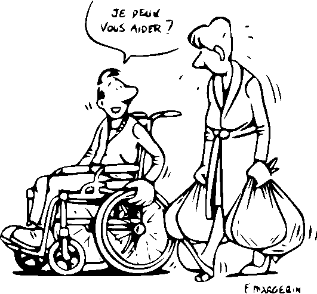
Une personne en fauteuil roulant, dans un environnement accessible, n’est pas en situation de handicap.
Une population diverse et variée aux besoins différents
14% de la population est handicapée (15 ans et plus).
Enquête Vie quotidienne et santé - dispositif Autonomie 2021-2025
Limites d’une approche chiffrée
- Définition du handicap variable.
- Forces et faiblesses des approches statistiques.
- Logique marchande versus droit humain.
Pour aller plus loin :
Différents types de handicaps
-
Handicaps physiques et sensoriels :
- visuels,
- auditifs,
- moteurs.
-
Handicaps mentaux :
- handicaps intellectuels,
- handicaps cognitifs (ex. troubles DYS),
- handicaps psychiques.
- Polyhandicap : un handicap moteur ou sensoriel et un handicap mental.
- Troubles de santé invalidants : cancer, douleurs chroniques, allergies…
Chaque personne est différente.
Exemples de besoins spécifiques pour naviguer sur le web
- Naviguer seulement au clavier
- Naviguer seulement à la souris
- Lire les descriptions des éléments visuels
- Lire les descriptions des éléments audios
- Maîtriser son environnement et naviguer à son rythme
- Personnaliser l’affichage (couleurs, taille des caractères, police…)
- Besoins liés au vieillissement des utilisateurs
Pour aller plus loin : « Personnes handicapées et navigation sur le Web » du guide « Défauts d’accessibilité : impacts sur les utilisateurs ».
Technologies d’assistance
Permettre l’accès par un autre moyen.
Quelques exemples :
- plage braille ;
- clavier monomanuel ;
- headstick ;
- eye-tracking ;
- clavier visuel ;
- lecteur d’écran ;
- contacteur au souffle ;
- trackball ;
- contrôle par la pensée ;
- etc.
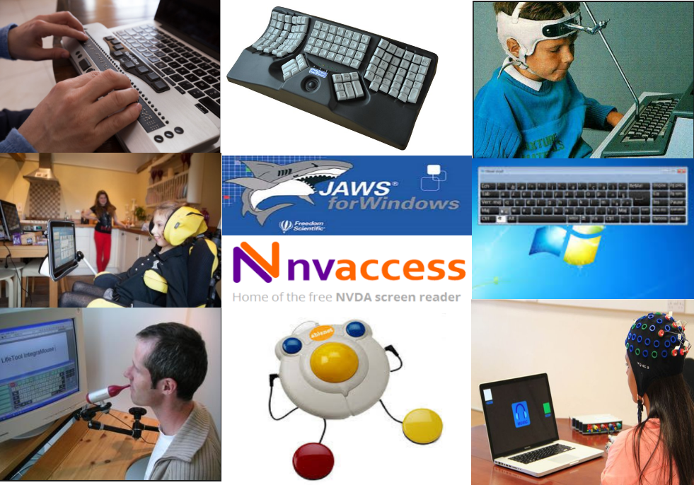
Accessibilité et universalité
Définition de l’accessibilité du web
« L’accessibilité du Web signifie que les personnes handicapées peuvent utiliser le Web. Plus précisément qu’elles peuvent percevoir, comprendre, naviguer et interagir avec le Web, et qu’elles peuvent contribuer sur le Web.
7 avril 1997 : création de la WAI (Web Accessibility Initiative)
Avant d’être un sujet technique, l’accessibilité numérique s’inscrit dans une démarche d’égalité. Elle constitue un enjeu politique et social essentiel afin de garantir à tous, sans discrimination, le même accès à l’information et aux services en ligne, en levant les barrières qu’elles peuvent rencontrer.
Utilisation du numérique en France
- + de 88 % utilisent Internet
- 84 % (8 personnes sur 10) se servent d’un smartphone (+7 points en 1 an)
- 71 % des Français utilisent l’e-administration
- 76 % ont fait un achat en ligne au cours des 12 derniers mois
- 67 % sont inscrits sur des réseaux sociaux
Les promesses du numérique
Le numérique, vecteur d’inclusion…
- Autonomie
- Ne plus dépendre de l’aide de quelqu’un pour les choses les plus simples comme faire ses courses, gérer son compte, payer ses impôts…
- Intégration professionnelle
- Faciliter la vie professionnelle.
- Créer de nouvelles opportunités.
- Citoyenneté et vie sociale.
- Utiliser les mêmes moyens d’expression que tout le monde (réseaux sociaux…)
Le numérique pour les personnes handicapées
Le numérique, vecteur d’exclusion…
- En France, 80 à 90 % des sites web restent inaccessibles.
- La situation des applications métiers est catastrophique.
- Les personnes handicapées restent exclues des nouveaux médias et des nouveaux réseaux de communication.
Pour aller plus loin :
- Conférence donnée à BlendWebMix par Sylvie Duchateau
- Témoignages de personnes handicapées sur notre blog : Isabelle Ravet, Emmanuelle Aboaf, Dany Lejolivet, Damien Senger, Pierre Reynaud, Marie Corbal, Guillaume Huéber
Démonstrations
- Loupe d’écran, clavier visuel, personnalisation de l’écran.
- Lecteur d’écran
Des technologies et des utilisateurs
- Un ordinateur qui se commande avec les yeux
- Contrôler un dispositif par la pensée
- Navigation par contacteur : Todd Stabelfeldt — iOS Switch Control
L’accessibilité dans la législation française
L’article 47 de la loi de 2005
« Sont accessibles aux personnes handicapées […] les services de communication au public en ligne des organismes suivants : »
Article 47 en intégralité
Pour en savoir plus : a42.fr/loi.
- Les personnes morales :
- de droit public (administrations…) ;
- de droit privé délégataire d’une mission de service public (gestion de l’eau, des transports…) ;
- de droit privé constituées spécifiquement pour satisfaire les besoins d’intérêt général autre que financier ou commercial (office de tourisme, culturel, social…).
- Les entreprises dont le chiffre d’affaires excède un certain seuil (250 millions d’euros).
Les obligations
- Être conforme au RGAA.
- Publier une déclaration d’accessibilité avec l’état et le niveau de conformité.
- Mettre en place un moyen de contact dédié et porter assistance aux utilisateurs dans un délai raisonnable.
- Afficher le statut de conformité (non conforme, partiellement conforme, totalement conforme) sur la page d’accueil.
- Publier un schéma pluriannuel de mise en accessibilité, décliné en plans d’action annuels.
Sanction maximale de 25 000 € par site pour défaut d’affichage.
Ordonnance du 6 septembre 2023
Modification de l’article 47 et création de l’article 47-1 :
- ARCOM (Autorité de régulation de la communication audiovisuelle et numérique) désignée pour opérer des contrôles sur les sites du secteur public
- Sanction de 50 000€ pour tout défaut de conformité au RGAA pour le secteur public (après premières étapes de médiations)
(à venir)
Directive européenne 2019/882 relative aux produits et services
- Les produits et services doivent être accessibles aux personnes handicapées
- Les sites internet, applications mobiles et interfaces électroniques ou numériques qui y sont liés doivent être rendus accessibles.
Les produits et services concernés :
- Livre numérique
- Commerce électronique (liste des produits et services concernés à définir)
- Services bancaires, de crédits et d’investissement
- Médias et services donnant accès à des médias audiovisuels
- Transports et services de téléphonie
Délai de mise en conformité :
- 28 juin 2025 pour tous les nouveaux produits et services
- Jusqu’en 2030 pour l’existant
- Autres délais spécifiques pour les terminaux bancaires
Exemption pour les entreprises de services de moins de 10 personnes, ou dont le CA est inférieur à 2 millions d’euros
Autorités de contrôles désignées : DGCCRF, Banque de France, AMF, ARCOM, etc.
Ressources :
- Directive (UE) 2019/882 du 17 avril 2019 relative aux exigences en matière d’accessibilité applicables aux produits et services
- Transposition de la Directive européenne (UE) 2019/882 relative aux exigences en matière d’accessibilité applicables aux produits et services
- Impact sur l’accessibilité numérique de la Directive européenne (UE) 2019/882 relative à l’accessibilité des biens et services
Normes et référentiel
Les normes d’accessibilité
du W3C
- UAAG, pour les agents utilisateurs : affichage par le navigateur de l’infobulle d’un lien à la souris et au clavier.
- ATAG, pour les outils d’édition de contenus : alternatives aux boutons de mise en forme, production de contenus conformes.
- WCAG, pour les contenus web : alternatives aux éléments graphiques.
- API ARIA, pour les composants riches.
- WCAG 2.0 (2008)
- WCAG 2.1 (juin 2018) :
- inclut des problématiques supplémentaires (basse vision, troubles cognitifs et difficultés d’apprentissage) ;
- traduction en français des WCAG 2.1 coordonnée par Access42.
- WCAG 2.2 (octobre 2023) : 9 nouveaux critères dont 6 A et AA.
Trois niveaux d’accessibilité
Niveaux A, AA et AAA.
Arbitrage sur les niveaux selon deux critères :
- importance pour les personnes handicapées ;
- faisabilité.
Le niveau simple A permet de s’assurer de l’accès à l’information et d’une utilisabilité de base : 80 % des critères.
Le niveau AA contient des améliorations et la prise en charge de contextes particuliers.
Le niveau AAA ne peut pas s’appliquer à tous les types de contenus et de situations.
Le cas du triple A (AAA)
« Il n’est pas recommandé de faire de la conformité au niveau AAA une politique générale pour des sites entiers parce qu’il n’est pas possible de satisfaire tous les critères de succès de niveau AAA pour certains contenus. »
Source WCAG (en anglais)
Référentiel général
d’amélioration de l’accessibilité
RGAA 4
- Transposition du standard européen EN 301 549 V3.2.1 basé sur WCAG 2.1
- 2 parties : obligations d’accessibilité et méthode technique.
Zoom sur la méthode technique du référentiel
4 sections
- La
liste des critères et des tests avec :
- des cas particuliers ;
- des notes techniques.
- un glossaire ;
- un environnement de test (base de référence) ;
- des références.
Compatible avec l’accessibilité
Selon WCAG :
« compatibles avec les technologies d’assistance des utilisateurs ainsi qu’avec les fonctions d’accessibilité des navigateurs et des autres agents utilisateurs. »
Environnement de test
- Combinaisons OS / Navigateur / Lecteur d’écran (desktop et mobile) ;
- Base de référence et environnement maîtrisé ;
- Adaptable et personnalisable selon le contexte.
| Technologie d’assistance | Navigateur |
|---|---|
| NVDA (dernière version) | Firefox |
| JAWS (version précédente) | Firefox |
| VoiceOver (dernière version) | Safari |
| Système | Technologie d’assistance | Navigateur |
|---|---|---|
| iOS | VoiceOver (dernière version) | Safari |
| Android | Talkback (dernière version) | Chrome |
Pour tester un site web sur un terminal mobile, l’environnement de test devra comporter une des deux combinaisons (iOS ou Android). À noter que dans le cas d’un site web mobile grand public, il est fortement conseillé de tester dans les deux environnements.
La notion d’aménagement raisonnable
« On entend par “aménagement raisonnable” les modifications et ajustements nécessaires et appropriés n’imposant pas de charge disproportionnée ou indue apportés, en fonction des besoins dans une situation donnée, pour assurer aux personnes handicapées la jouissance ou l’exercice, sur la base de l’égalité avec les autres, de tous les droits de l’homme et de toutes les libertés fondamentales. »
Article 2 de la Convention relative aux droits des personnes handicapées
Refus d’aménagement raisonnable = discrimination
- entre 3 et 5 ans d’emprisonnement ;
- 45 000 à 75 000 euros d’amende.
L’article 225-1 donne la définition d’une « discrimination ».
Au-delà du risque juridique
Les personnes handicapées sont des citoyennes comme les autres.
Elles ont les mêmes droits et nous avons vis-à-vis d’elles les mêmes devoirs.
Auditer l’accessibilité avec le RGAA
Outils de détection
- Extensions (Firefox et Chrome) :
- Assistant RGAA : tests assistés pour l’ensemble des tests du RGAA
- HeadingsMap pour la validation de la hiérarchie des titres
- WCAG Contrast Checker
- Logiciels :
Bookmarklets Access42
Le fichier est dans le dossier de formation : ressources/bm-access42.html
- Importer dans Firefox :
- menu de l’application > marque-pages > organiser les marques-pages
- puis activer le bouton double-flèche « Importer et sauvegarder les marque-pages », choisir « Importer des marque-pages au format html » et sélectionner le fichier des bookmarklets.
- le dossier « Audit RGAA (A42) » est présent dans la liste des marque-pages.
- Importer dans Chrome :
- menu de l’application > favoris et listes > gestionnaire de favoris
- puis activer le bouton en haut à droite « Importer des favoris » et sélectionner le fichier des bookmarklets.
Important : Access42 ne réalise pas de maintenance, de suivi ou de maj sur ces bookmarklets, ils vous sont donnés à titre gracieux dans le cadre de cette formation. De même, Access42 ne saurait endosser la responsabilité en cas d’erreurs de détection du fait d’un mauvais usage ou d’un bug de ces outils.
Usage
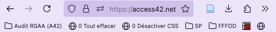
- Glisser/déposer le dossier pour l’avoir toujours en premier dans vos marque-pages.
- Pour plus de fluidité, sortez les bookmarklets (BM) « Tout effacer » et « Désactiver les CSS » pour les avoir toujours à portée de main.
- Une fois qu’un BM est activé vous pouvez le désactiver en activant le BM « Tout effacer ».
- Les BM ne se cumulent pas : si un BM est activé sur une page, et que vous activez un autre BM, les données du premier seront effacées de la page.
Crédits
Certains bookmarklets sont inspirés ou repris d’autres auteurs :
- Désactiver les CSS : toggle-css-bookmarklet de Petr Hurtak
- 05 Tableaux : Table de Paul J. Adams.
- 08.2 Validation : Validate de Deque.
- 12.10 Raccourcis claviers : Character key shortcut de 3needs.
Grille d’audit
- Grille d’audit modèle Access42 dans
ressources > rgaa41-modele-grille-d-audit-Access42.xlsx: cette grille vous propose un tableau de résultats amélioré et un onglet « Critères » avec des textes modèles prêt à l’emploi pour vos audits. - Grille d’audit RGAA 4 fournie par la DINUM
Outils supplémentaires
- Documentation RGAA 4 : méthodologie d’audit, liste des critères triple A et notes de révision
- Extension Axe Devtools : réalise un certain nombre de tests automatiques (accessible depuis l’inspecteur de code dans l’onglet « Accessibility Audit »)
- a11y tools : ensemble de bookmarklets pour aider à la détection (liste de liens, listes de boutons, liste des rôles dans la page)
Images
- 8 critères niveau [A]
- 1 critère niveau [AA]
Images [A]
- Balises
imgou balises avec unrole="img" - Balises
area,input type="image",svg,object,embed,canvas
Image porteuse d’information
L’alternative donne l’information essentielle à la compréhension du contenu auquel elle est associée.
Image de décoration
Image qui n’apporte aucune information complémentaire par rapport au contexte. L’image doit être ignorée par les technologies d’assistance.
Ressource : Images Tutorial (WAI W3C) (arbre de décision)
Images de décoration ou images porteuses d’information ?
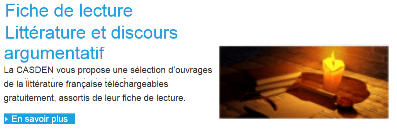
Images de décoration [A]
imgetarea:alt="",aria-hidden="true"ourole="presentation"svg(embed,object,canvas) :aria-hidden="true"et aucune autre méthode de labellisation.
Si l’image est dans un conteneur qui possède la propriété aria-hidden="true", elle est également masquée.
- Référence RGAA :
- 1.2 [A]
<img src="img.png" alt=""/>
<img src="img.png" aria-hidden="true"/>
<img src="img.png" role="presentation"/>Aide à la détection : images de décoration
Bookmarklet 01 Images
- Repérer les images de décoration parmi les éléments entourés.
- Vérifier la présence d’une méthode adéquate pour ignorer l’image.
Note : les images-liens ne sont pas évaluées sur ce critère, elles sont traitées dans la thématique Liens.
Exemple conforme
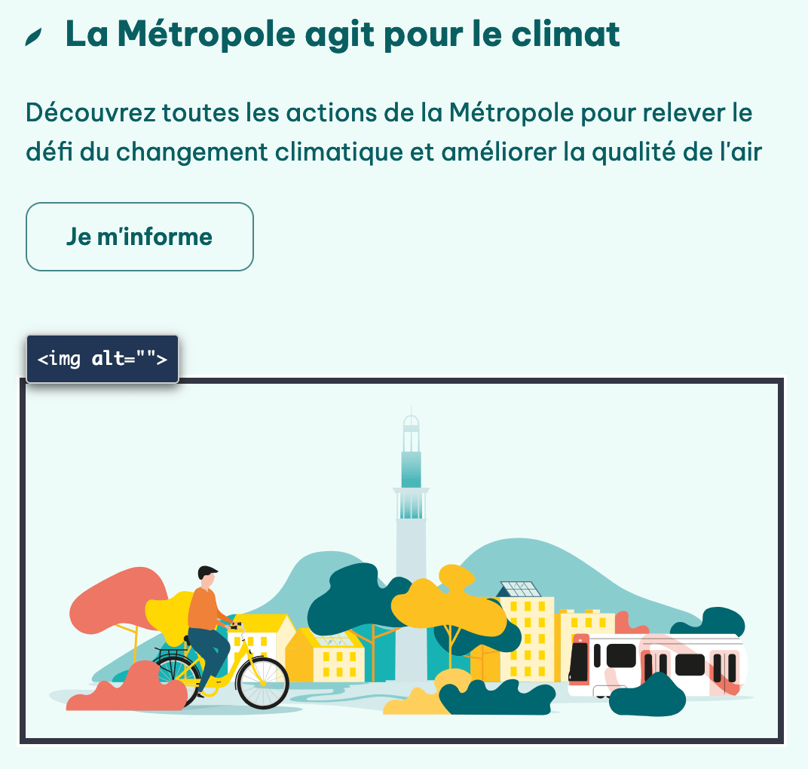
alt="".Image masquée avec la propriété aria-hidden
Exemple conforme
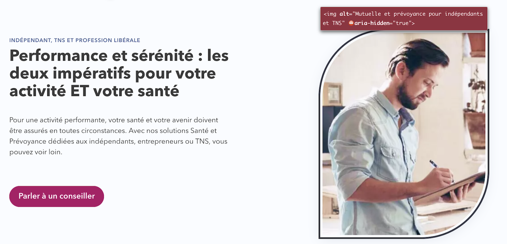
aria-hidden="true".Image masquée par son conteneur
Exemple conforme
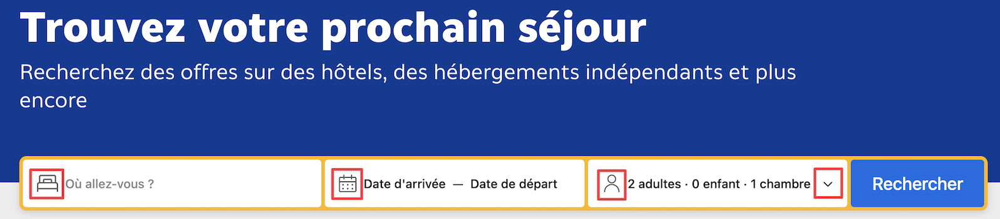
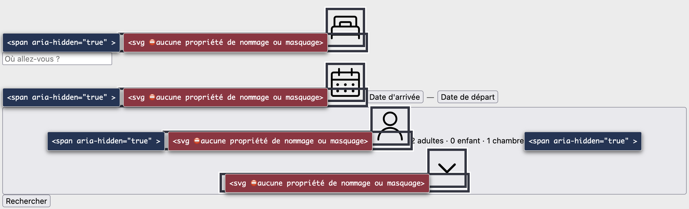
aria-hidden="true".Images décoratives avec attribut alt renseigné
Exemple non conforme
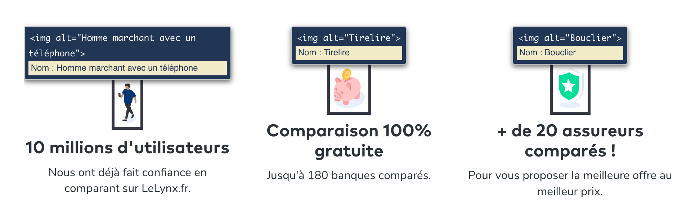
Images porteuses d’information [A]
Pour chaque image porteuse d’information : vérifier qu’une alternative est présente et qu’elle est pertinente.
Selon la nature de l’image, l’alternative peut être créée par l’une des méthodes de nommage suivantes : aria-labelledby, aria-label, alt, title.
Cas particuliers :
Les images tests ou les images CAPTCHA sont évaluées aux critères 1.4 et 1.5.
<img src="" alt="[alternative]" />
<img src="img.png" aria-labelledby="id_alt"/>
<span id="id_alt">un texte alternatif</span>
<img src="img.png" aria-label="[alternative]"/>
<img src="img.png" title="[alternative]"/>Calcul du nom accessible
aria-labelledby="@id-alternative"aria-label="[alternative]"- attribut
alt="[alternative]" - attribut
title="[alternative]"
Labellisation avec propriété aria-label
<img src="img.png" alt="Météo chaude et humide" aria-label="température basse" />Nom accessible : "Température basse"
Le contenu de l’attribut alt n’est jamais annoncé par un lecteur d’écran.
Labellisation avec attribut alt
<img src="img.png" alt="Météo chaude et humide" title="température basse" />Nom accessible : "Météo chaude et humide"
Dans ce contexte, le contenu de l’attribut title constitue la description accessible.
Labellisation avec propriété aria-labelledby
<img src="img.png" title="température basse" aria-labelledby="meteoText" />
<p id="meteoText">Météo chaude et humide"</p>Nom accessible : "Météo chaude et humide"
Images vectorielles [A]
Pour une image svg porteuse d’information, on vérifie deux choses :
- la présence de la propriété
role="img"(indispensable pour que la balise soit considérée comme un élément image, sinon, elle pourrait être ignorée par les TA), - la présence d’une alternative avec
aria-labelouaria-labelledby.
<svg role="img" aria-label="espace utilisateur">
[...]
</svg>
<svg role="img" aria-labelledby="id_title">
<title id="id_title">espace utilisateur</title>
[...]
</svg>Exemple conforme
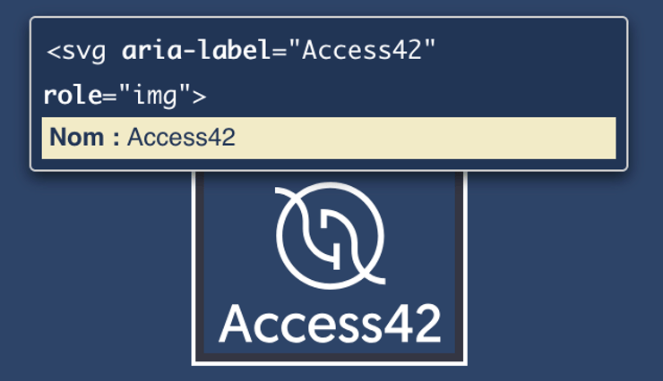
Sur le site d’Access42, le logo a bien un role="img" et une alternative pertinente (propriété aria-label).
Exemple non conforme
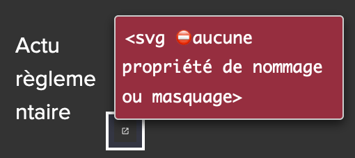
Dans le pied de page de bdo.fr, l’icône svg qui indique l’ouverture dans une nouvelle fenêtre n’a pas de role="img" ni d’alternative pertinente.
Aide à la détection : images porteuses d’information
- Repérer les images porteuses d’information parmi les éléments entourés.
- Vérifier que l’alternative (nom accessible) est présente et pertinente.
Note : les images-liens ne sont pas évaluées sur ce critère, elles sont traitées dans la thématique Liens.
Exemple conforme
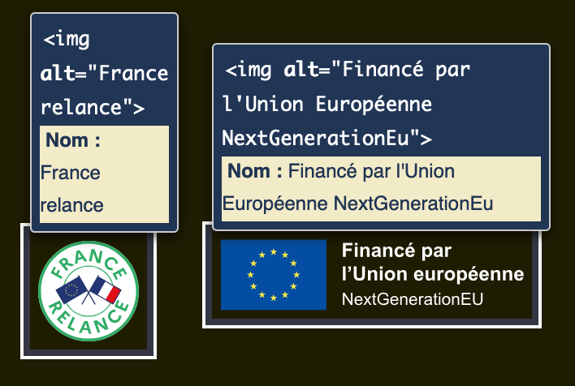
Images CAPTCHA [A]
L’alternative de l’image doit permettre d’identifier la nature de l’image.
<img src="" alt="Code de confirmation à saisir" />Tout captcha graphique doit disposer d’une alternative non graphique :
- CAPTCHA sonore ou logique ;
- envoi du code par email / SMS.
Ressource : Inaccessibility of CAPTCHA
Exemple non conforme
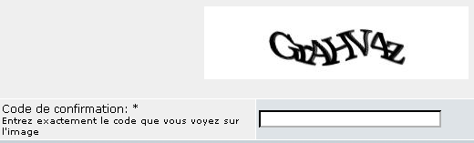
Exemple conforme
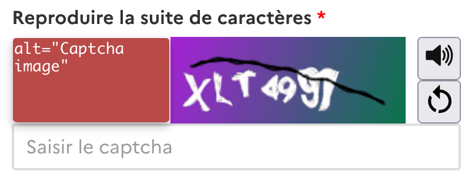
Aide à la détection : images CAPTCHA
Bookmarklet 01 Images
- Repérer les images CAPTCHA parmi les éléments entourés.
- Vérifier la présence d’une alternative textuelle pertinente qui identifie l’image comme CAPTCHA.
- Vérifier la présence d’une alternative non graphique fonctionnelle.
Images — description détaillée [A]
Lorsque l’alternative d’une image doit être structurée (ex. titres, liste, tableau…), alors il faut une description détaillée.
Modalités de mise à disposition de la description détaillée :
- un texte adjacent à l’image ;
- ou un texte disponible depuis un lien ou un bouton adjacent.
Attention : longdesc, bien que référencé dans le RGAA 4, est déclaré obsolète en HTML, il ne doit plus être utilisé.
Exemple conforme
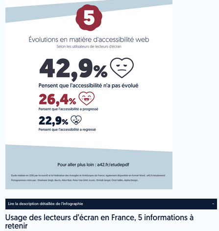
Aide à la détection : images et description détaillée
Bookmarklet 01 Images
- Repérer les images qui nécessitent une description détaillée parmi les éléments entourés.
- Vérifier la présence d’une description détaillée ou d’un composant permettant d’y accéder.
- Vérifier la pertinence de la description détaillée.
Texte en image [AA]
Le texte en image (porteur d’information) doit être remplacé par du texte stylé (HTML/CSS) afin de permettre aux utilisateurs qui en ont besoin d’adapter les textes à leur préférence d’affichage (taille, couleur, interlignage, etc.) :
- par un mécanisme de remplacement,
- par défaut.
Cas particuliers :
Logo, dénomination commerciale, CAPTCHA, image-test, texte non reproductible en HTML/CSS.
- Référence RGAA :
- 1.8 [AA]
Cas particulier
Le texte contenu dans cette image ne peut pas être reproduit en HTML/CSS.
Exemple de mécanisme de remplacement
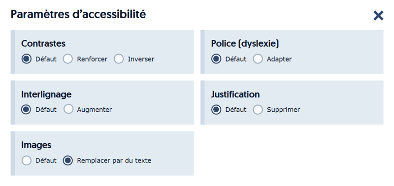
AccessConfig propose un mécanisme de remplacement des textes en image porteurs d’information par leur alternative textuelle.
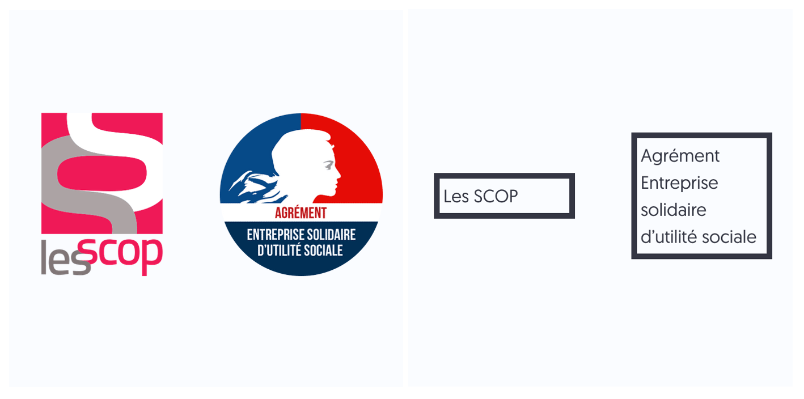
Sur le site d’Access42, les textes en images porteurs d’information peuvent être remplacés par leur alternative textuelle.
Aide à la détection : textes en images
Bookmarklet 01 Images
- Repérer les textes en image porteurs d’information qui pourraient être réalisés en HTML/CSS.
- Vérifier si le site propose un mécanisme de remplacement et évaluer son efficacité sur les textes en image.
Images légendées [A]
Légende d’image : lorsqu’un texte, adjacent à une image, contient des informations sur l’image (copyright, date, auteur…) ou est destiné à compléter les informations apportées par l’image (ex. un texte associé à une image dans une galerie d’images)
- Référence RGAA :
- 1.9 [A]
<figure role="group" aria-label="[contenu du figcaption]">
<img src="…" alt="label-image" />
<figcaption>
[label-image] Légende de l’image
</figcaption>
</figure>
Note : Le rôle group peut être remplacé par le rôle figure.
Aide à la détection : images légendées
- Repérer les images légendées.
- Vérifier que la légende est bien reliée à l’image.
Exemple conforme
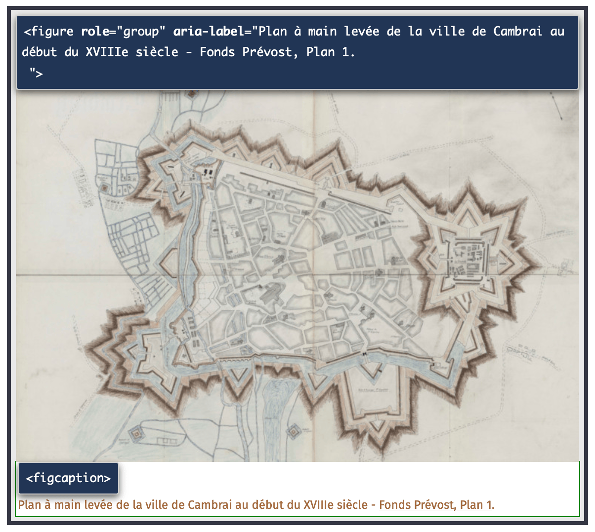
Exemples non conformes
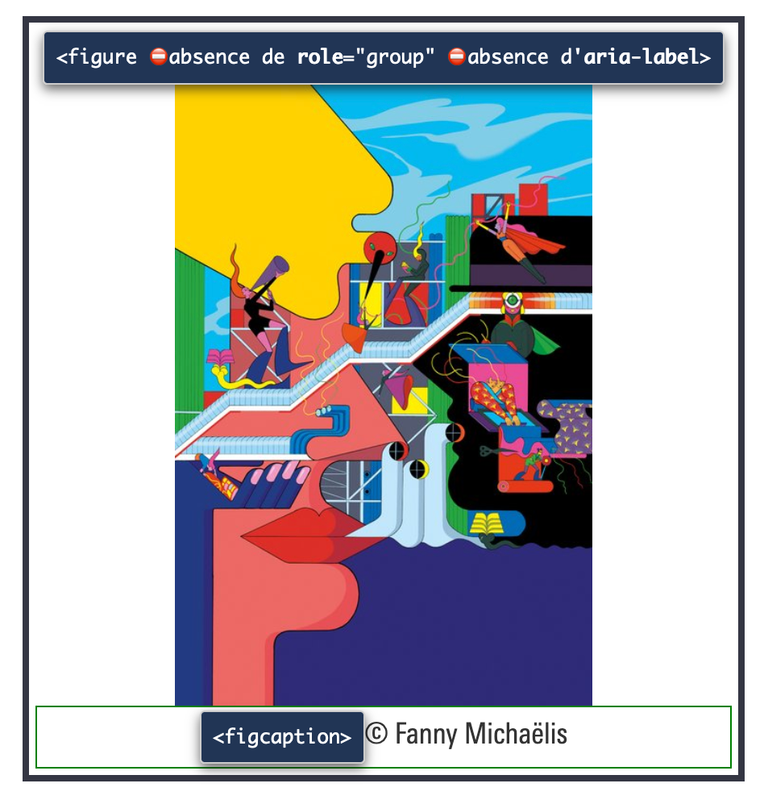
Exercice
Traiter la thématique « Images » du RGAA.
Site d’exercice
Cadres
- 2 critères niveau [A]
Contenu des cadres
Le contenu des cadres est exempté, s’il n’est pas sous la responsabilité de l’éditeur du site.
Dans ce cas, on veillera à respecter le principe de non-interférence.
Fournir lorsque c’est possible une alternative au contenu exempté (ex. : adresse insérée en texte comme alternative à une carte interactive).
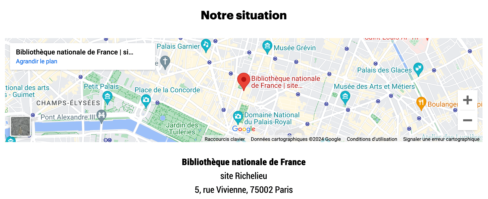
Aide à la détection : cadres
- Repérer dans le tableau les cadres (le bouton « Montrer » permet d’encadrer le cadre dans la page).
- Vérifier la présence et la pertinence du titre de cadre (attribut
title).
Exemple non conforme
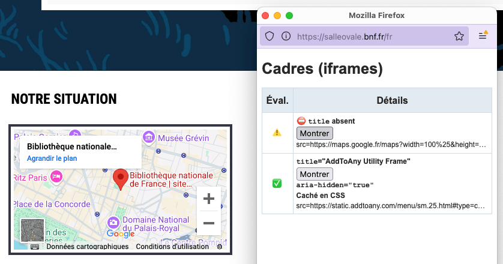
Sur la page d’accueil salleovale.bnf.fr, le cadre qui intègre la carte interactive n’a pas d’attribut title.
Couleurs
- 2 critères niveau [A]
- 1 critère niveau [AA]
Information par la couleur [A]
Cas les plus courants :
- page active
- onglet sélectionné
- slide active dans un carrousel
Alternatives courantes :
titlesur les liens ou boutonstitle="accueil - page active"- propriétés ARIA (
aria-current,aria-pressed,aria-selected) - texte positionné hors écran (
class="sr-only")
Note : une alternative pertinente est une alternative perceptible pour tout le monde.
Attention à l’utilisation de textes cachés en CSS par exemple qui ne seront pas vus par les personnes déficientes visuelles qui n’utilisent pas de lecteur d’écran. Il sera souvent nécessaire de doubler l’information par la couleur par un changement de forme (mise en gras, ajout d’une icône).
- Référence RGAA :
- 3.1 [A]
Exemple conforme
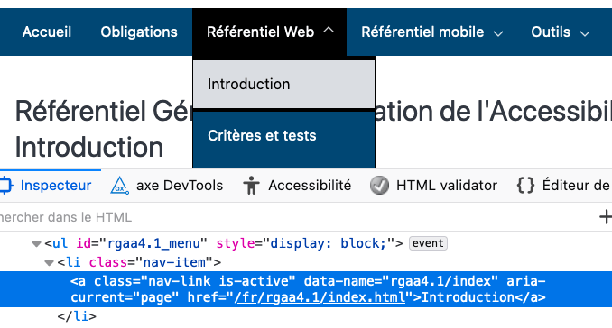
Sur le site accessibilite.public.lu, la page active est mise en évidence par la couleur (et une inversion de contraste) et l’ajout d’une propriété aria-current.
<a aria-current="page" href="/fr/rgaa4.1/index.html">Introduction </a>Autre implémentation conforme :
<a title="Introduction - page active" href="/fr/rgaa4.1/index.html">Introduction </a>Positionnement hors écran
.sr-only {
border: 0 !important;
clip: rect(1px, 1px, 1px, 1px) !important;
-webkit-clip-path: inset(50%) !important;
clip-path: inset(50%) !important;
height: 1px !important;
margin: -1px !important;
overflow: hidden !important;
padding: 0 !important;
position: absolute !important;
width: 1px !important;
white-space: nowrap !important;
}
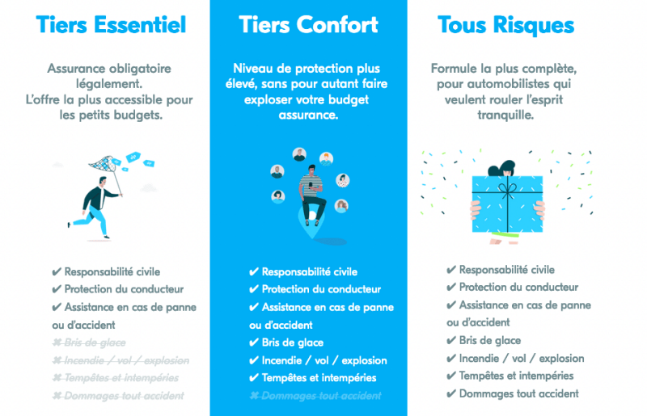
Exemple non conforme
Sur cette page, les services non compris dans une formule sont grisés (couleur) et barrés (forme) et précédés d’une icône (forme), mais cette information n’est pas disponible pour une personne aveugle.
Extrait du texte disponible dans le code source :
✖ Incendie / vol / explosionCorrection possible
✖ Incendie / vol / explosion <span class="sr-only">non compris dans cette offre</span>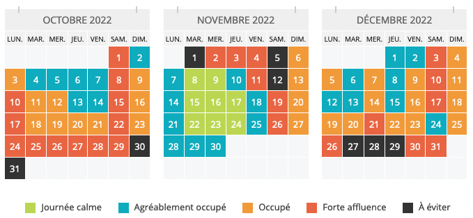
Exemple non conforme
Sur le site ooparc.com, l’affluence des parcs est indiquée par une mise en couleur des jours dans les calendriers.
Un texte non visible est disponible dans le code source, mais il est caché en CSS par visibility:hidden, ce qui le rend inaccessible aux lecteurs et loupes d’écran. De plus, pour les utilisateurs malvoyants, la distinction entre les différentes couleurs reste problématique, voire impossible.
Extrait du texte disponible dans le code source :
<td class="period-3">1 <span><b>Samedi 1 octobre 2022</b><br><i>Forte affluence</i></span></td>CSS utilisée pour masquer le texte :
#park-attendance tbody td span {
visibility: hidden;...}Correction possible : ajouter une forme en plus de la couleur (par exemple une icône ou un motif associé à chacune des couleurs). Supprimer la propriété CSS visibility:hidden et positionner le texte hors écran (méthode sr-only)
Exemple non conforme

Le système de captcha MailInBlack propose aux utilisateurs une validation basée sur la perception d’une couleur.
Contrastes des textes [AA]
Évaluation pour les textes, les textes en images, les textes incrustés (vidéo…)
Le rapport de contraste minimum requis dépend de la taille calculée du texte :
- taille normale (<24px ou 18,5px en gras) : au moins 4,5:1 ;
- taille agrandie (>= 24px ou 18,5px en gras) : au moins 3:1 ;
Attention : il s’agit de la taille calculée et non pas de la taille déclarée dans les CSS au niveau de l’élément.
Cas particuliers :
Logo, nom de marque, texte ou image de texte décoratif, élément inactif (disabled)
- Référence RGAA :
- 3.2 [AA]
Aide à la détection : contrastes des textes
Extension WCAG Contrast Checker Logiciel Colour Contrast Analyser
- Activer l’extension WCAG Contrast Checker (Firefox ou Chrome) et contrôler les couples de couleurs évalués. Attention, l’outil ne peut évaluer que les textes HTML/CSS.
- Utiliser le logiciel CCA pour évaluer les contrastes des textes en images et incrustés, et pour évaluer les contrastes des textes superposés à des images.
Déterminer la taille calculée d’un texte HTML
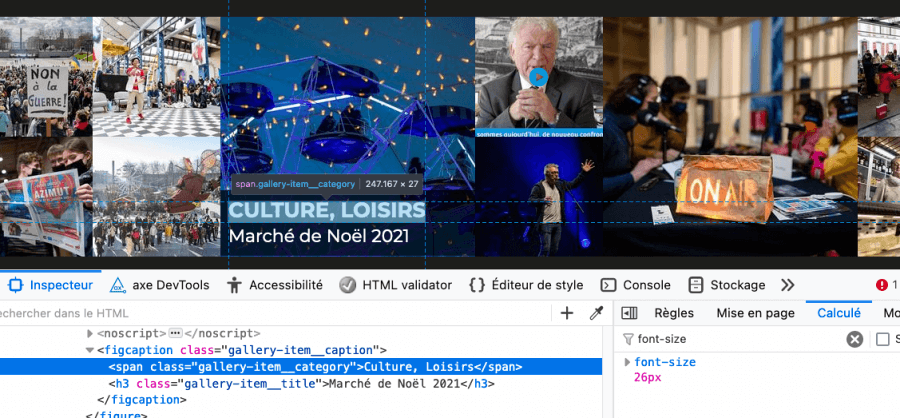
Pour déterminer la taille calculée d’un texte et en déduire s’il est en taille normale ou agrandie.
- Dans Firefox et Chrome, activer l’inspecteur et se positionner dans le code, sur le nœud contenant le texte dont on souhaite connaître la taille calculée.
- Dans le panneau de droite de l’inspecteur, activer l’onglet "Calculé".
- Dans le champ permettant de filtrer, saisir
font-sizeet constater la taille calculée en px.
Contraste du contenu non textuel [AA]
Évaluation pour tous les éléments graphiques (non textuels) porteurs d’information : images, icônes, mise en couleur porteuse d’information (élément actif), identification des éléments interactifs (bordure des champs de formulaire).
- Contraste minimum de 3:1
- Présence d’un mécanisme de remplacement.
Cas particuliers :
Composants inactifs, composants natifs du navigateur (champs de formulaires), éléments avec une alternative, logo, drapeau, photos…
- Référence RGAA :
- 3.3 [AA]
Exemple non conforme
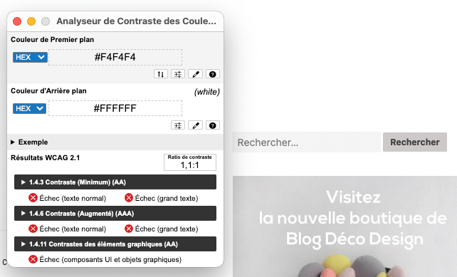
Sur le site blogdecodesign.fr, le champ de saisie du moteur de recherche n’est pas perceptible. Sa couleur de fond #F4F4F4 a un rapport de contraste de 1,1 avec le fond blanc #FFF de la page (au lieu de 3).
Le placeholder (texte grisé dans le champ qui disparaît à la saisie) pourrait permettre de percevoir la localisation du champ. Dans Firefox, le texte du placeholder par rapport au fond du champ a un rapport de contraste de 4,4 (dans Firefox) au lieu de 4,5 (puisqu’il s’agit ici de texte en taille normale). Mais attention à l’attribut placeholder qui peut se présenter de manière très différente selon le navigateur employé. Par exemple, avec cette même page vue dans Safari, le rapport de contraste du placeholder avec la couleur de fond du champ de formulaire n’est plus que de 1,9.
Aide à la détection : contrastes des éléments non textuels
Logiciel Colour Contrast Analyser
- Identifier la ou les couleurs qui apportent l’information
- Contrôler la ou les couleurs avec la ou les couleurs environnantes.
- Le rapport minimum doit être de 3:1.
Exemple conforme
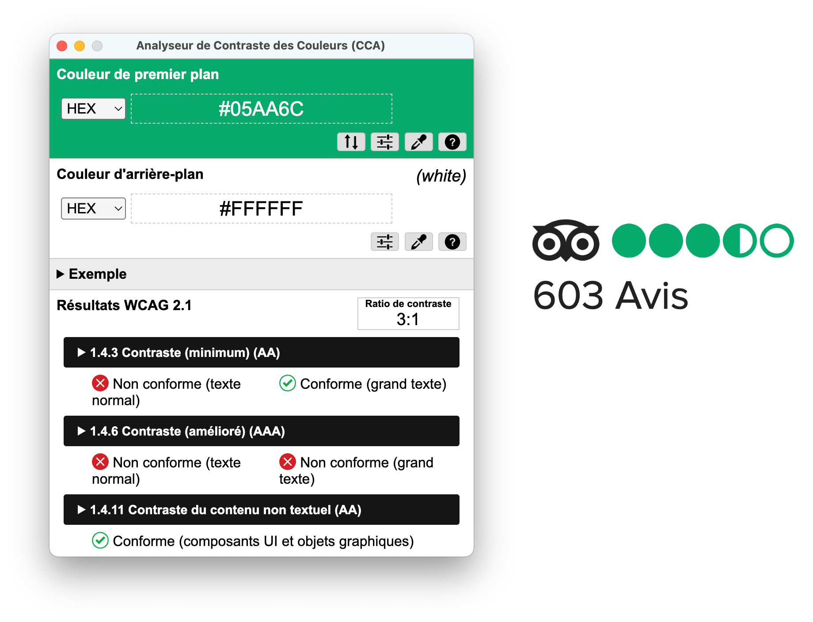
Exemple non conforme
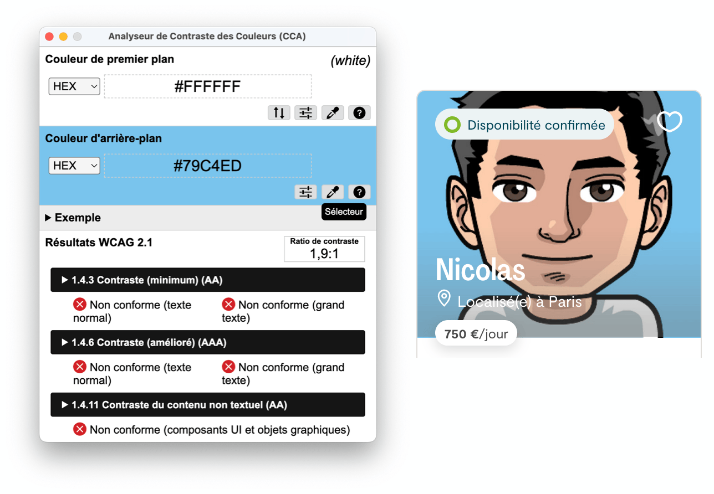
Sur malt.fr, dans les pages de résultats, les profils peuvent être ajoutés en favoris (bouton-icône cœur). Selon l’image de fond, le contraste est insuffisant (inférieur à 3).
Exemple non conforme
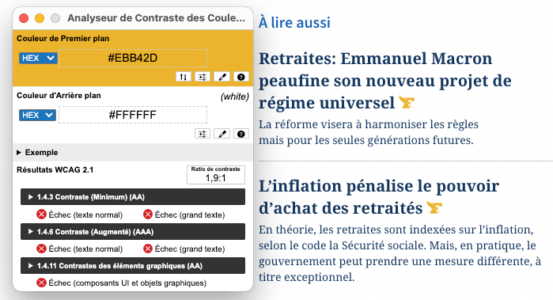
Sur lefigaro.fr, les articles réservés aux abonnés sont identifiés par une icône jaune (#EBB42D). Le rapport de contraste avec le fond blanc est de 1,9 (inférieur à 3). Les utilisateurs malvoyants ne pourront pas percevoir cette information.
Contrastes : mécanisme de remplacement [AA]
Un mécanisme de remplacement peut être mis à disposition pour afficher le site avec des contrastes conformes (texte et contenu non textuel). Ce sont les contrastes de cette version qu’il faudra alors évaluer.
Ressource : AccessConfig (sélecteur de styles open source), Understanding conforming alternate versions (WCAG)
Exemple conforme
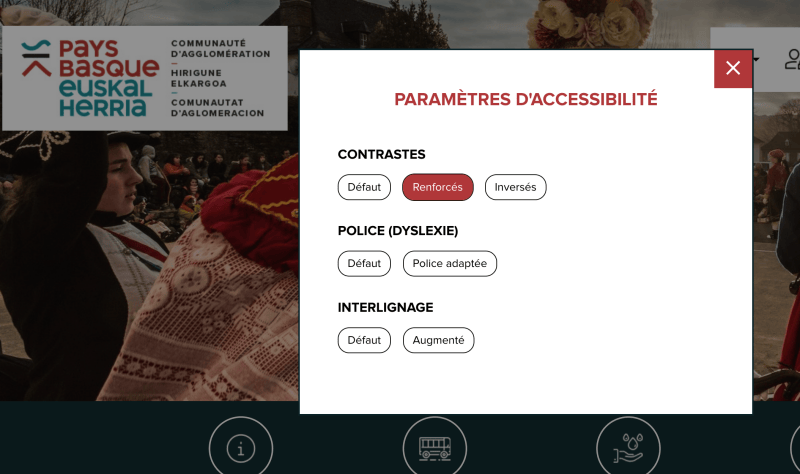
Sur le site communaute-paysbasque.fr, le bouton « Accessibilité » permet d’accéder à une fenêtre modale présentant des options de contrastes. L’option « Contrastes renforcés » lorsqu’elle est activée, affiche un site web avec des contrastes conformes.
Exercice
Traiter les thématiques « Cadres » et « Couleurs » du RGAA.
Site d’exercice
Éléments obligatoires
- 8 critères niveau [A]
- 2 critères niveau [AA]
Type de document et validation du code source [A]
Les critères 8.1 et 8.2 du RGAA 4 ne se testent plus.
Dans les relevés d’audit, ces critères doivent toujours avoir un statut conforme. On n’évalue ni ne remonte plus de non-conformités pour ces critères.
Voir les notes dans Understanding SC 4.1.1
Ressources :
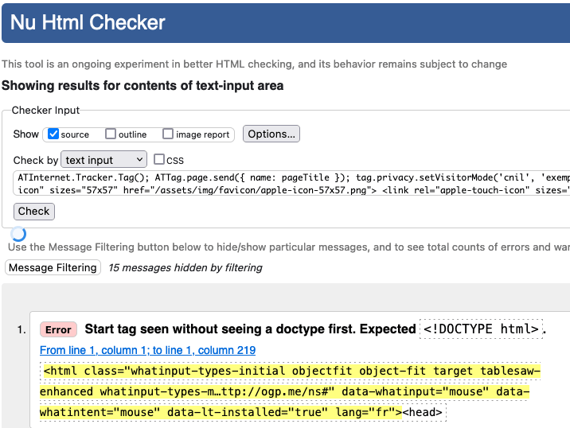
Titre de page [A]
Titre présent et pertinent.
<title>Titre de la page</title>Accessible depuis l’onglet et l’historique de navigation du navigateur, premier élément restitué par le lecteur d’écran au chargement de la page.
- Dans la mesure du possible, les titres sont uniques dans un site web.
- Mention des détails de la collection : tag, catégorie, etc.
Articles pour la catégorie « Emploi » - Mention de la pagination :
Recherche pour "tourisme" — Page 3 sur 4
Exemple non conforme
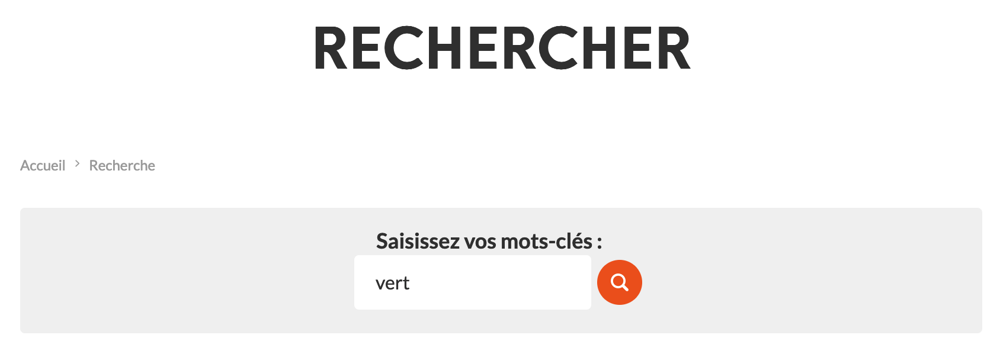
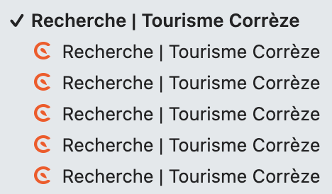
Sur le site Tourisme Corrèze, les titres des pages de résultats de recherche ne reprennent ni le terme recherché ni la pagination.
Aide à la détection : titre de page
- Contrôler la présence dans l’onglet du navigateur d’un titre de page (si aucun titre n’est défini, vous verrez apparaître l’url dans l’onglet).
- Survoler l’onglet du navigateur et vérifier la pertinence du titre.
Exemple non conforme
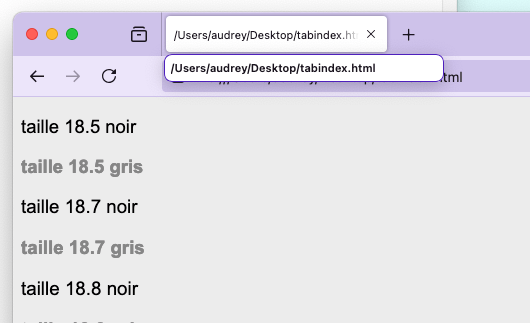
Sur cet exemple, la balise <title> est vide, l’onglet du navigateur affiche l’url.
Langue principale [A]
Identifier la langue principale de traitement de la page par l’attribut lang. Le code est récupéré par le lecteur d’écran au chargement de la page, c’est cette information qui permet de déterminer la langue dans laquelle sera vocalisée la page.
- Attribut
langet/ouxml:lang(en fonction du doctype) sur l’élément HTML ou sur chaque bloc de texte susceptible de contenir du texte. - Code de langue pertinent et valide (ISO 639).
Aide à la détection : langue principale
- Vérifier la présence de l’attribut
langouxml:langsur la balise<html>. - Vérifier la pertinence du code langue.
- En l’absence d’attribut
langsur la balise<html>, vérifier chaque bloc de texte et vérifier qu’une langue pertinente est définie.
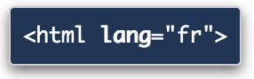
Changement de langue [AA]
- Attribut
langsur l’élément ou un parent - Si présent, code de langue pertinent et valide (ISO 639).
Cas particuliers :
Nom propre, nom commun de langue étrangère présent dans le dictionnaire officiel de la langue (en français : Académie française), terme inséré par les utilisateurs (message de commentaires, formulaire de recherche), langue non déterminable, langue morte ou imaginaire.
Exemple non conforme
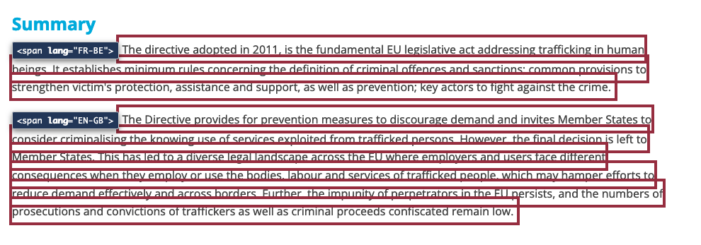
Sur cet exemple, un paragraphe écrit en anglais est signalé comme étant en français belge (lang="FR-BE").
Aide à la détection : changement de langue
- Repérer les mots en langue étrangère dans la page et vérifier qu’ils sont entourés.
- Vérifier pour tous les mots encadrés que la valeur de l’attribut
langest pertinente.
Les extensions de correction orthographique peuvent aider à détecter des termes en langue étrangère (par exemple : Grammalecte sur Firefox).
Exemple conforme
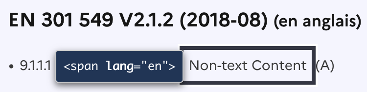
Sur le site du RGAA, les passages de texte en anglais sont signalés avec l’attribut lang="en".
Changements de sens de lecture [A]
- Attribut
dirsur l’élément lui-même ou un parent doit avoir comme valeurltr(gauche à droite) ourtl(droite à gauche) - La valeur
ltrest implicite et peut être omise sur l’élémenthtml. - Si l’attribut
direst présent, sa valeur doit être pertinente.
- Référence RGAA :
- 8.10 [A]
Exemple conforme
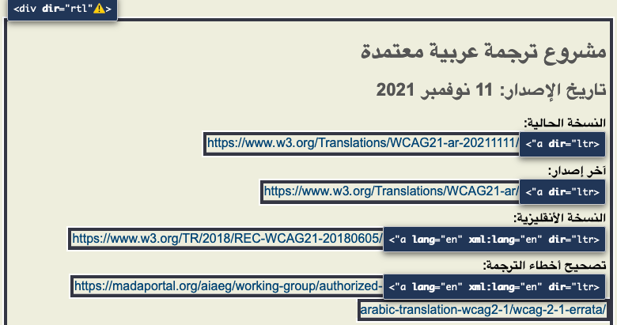
Dans la traduction en arabe des WCAG 2.1, le sens de lecture principal est défini de droite à gauche (dir="rtl") et toutes les insertions de contenus en anglais possèdent une indication de changement de sens de lecture (dir="ltr").
Aide à la détection : sens de lecture
Bookmarklet 08 Langue et direction
- Repérer les passages de texte ou les mots dont le sens de lecture est différent du sens de lecture principal et vérifier qu’ils sont entourés.
- Vérifier la pertinence de l’attribut
dirsur tous les éléments encadrés.
Respect de la sémantique du balisage [A]
Utiliser les éléments HTML pour leur rôle prévu.
Exemples de détournement :
<div>pour créer des paragraphes,<hx>détournés pour le référencement,<p>vides.
Note : l’utilisation de la propriété role="presentation" peut servir à supprimer la sémantique d’un élément. Son utilisation est néanmoins fortement déconseillée et non conforme dans le cas où la sémantique est essentielle (par exemple sur un titre hx).
- Référence RGAA :
- 8.9 [A]
Exemple non conforme
Sur le site Tourisme Corrèze, « Nos conseils / Nos coups de cœur » est structuré avec un titre (h4) alors qu’il ne constitue pas un titre.
Ce texte devrait être un simple paragraphe.
Aide à la détection : respect de la sémantique
Bookmarklet 08.9 Sémantique
- Vérifier que tous les éléments textuels sont entourés.
- Vérifier que la sémantique associée est pertinente.
Exemple conforme
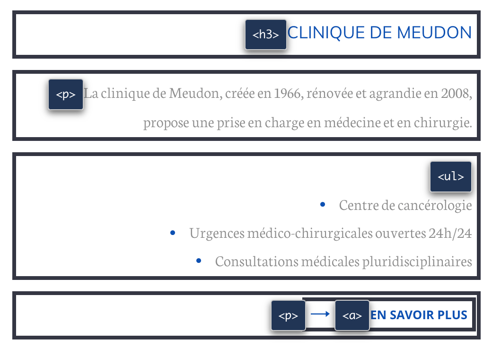
Note : afin de ne pas surcharger l’affichage, le bookmarklet n’indique pas les éléments <li>.
Exercice
Traiter la thématique « Éléments obligatoires » du RGAA.
Site d’exercice
Présentation de l’information
- 9 critères niveau [A]
- 5 critères niveau [AA]
Utilisation exclusive de CSS [A]
- Utilisation exclusive de CSS :
<link rel="stylesheet"/>;<style></style>;- ou attribut
style="..."en ligne.
- Pas d’attributs de mise en forme :
<table border="0">. - Pas d’éléments de mise en forme
<font>.
Note : les attributs width et height sont interdits sauf sur les éléments images img, canvas, embed, object, svg.
Ressources : Liste complète des attributs et balises interdites dans le glossaire du RGAA, Accessibilité d’Angular Material : l’attribut color et le RGAA
- Référence RGAA :
- 10.1 [A]
Exemple non conforme
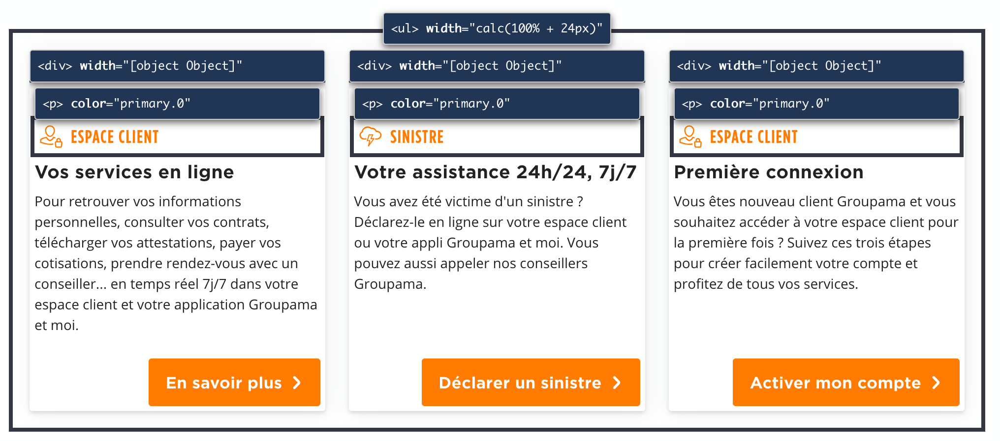
Sur la page d’accueil de groupama.fr, de nombreux attributs size et width sont utilisés pour gérer la mise en forme.
Aide à la détection : attributs de mise en forme
Repérer les éléments et attributs de mise en forme interdits sur les contenus entourés.
Exemple non conforme
Sur France Identité, les attributs frameborder, height et width sont utilisés pour gérer la mise en forme du lecteur Youtube.
Feuilles de styles (CSS) désactivées
Personne ne navigue CSS désactivées.
Il s’agit uniquement d’une méthode de test pour les critères RGAA (10.2 et 10.3).
Le but est de vérifier que les personnes qui ne perçoivent pas la mise en forme (personnes aveugles notamment) accèdent aux contenus de manière logique et compréhensible.
Contenus visibles
CSS désactivées
[A]
Les éléments porteurs d’information insérés avec CSS doivent avoir un équivalent textuel ou être insérés directement en HTML.
Exemples :
- les images de fond CSS (
background-image) porteuses d’information ; - le contenu inséré par CSS
content:’[texte]’.
- Référence RGAA :
- 10.2 [A]
Exemple conforme
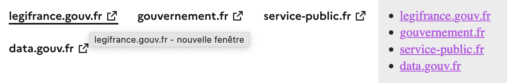
L’indication visuelle d’ouverture dans une nouvelle fenêtre disparaît CSS désactivées, mais l’information est bien doublée par du texte (attribut title).
Exemple non conforme
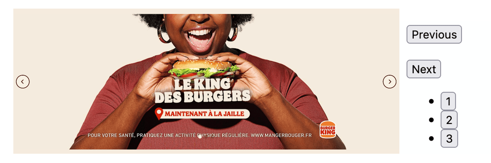
Sur Burger King Antilles, les offres commerciales sont des images de fond insérées avec CSS.
Le contenu n’est pas accessible pour les personnes aveugles et malvoyantes qui ne perçoivent pas l’image.
Aide à la détection : contenus insérés avec CSS
Méthode 1
Comparer la page CSS activées et CSS désactivées et repérer les éléments porteurs d’information qui disparaissent.
Méthode 2
Bookmarklet 10.2 Contenus CSS
- Sur la page (CSS activées), activer le bookmarklet.
- Repérer les éléments porteurs d’information parmi les contenus entourés.
- Vérifier si ces contenus insérés avec CSS ont un équivalent textuel (ex. texte inséré hors écran).
Contenus compréhensibles CSS désactivées [A]
L’ordre de succession des éléments dans le code source doit être logique.
Cas typiques : bandeau de cookies, dates, catégories et tags sur les vignettes d’actualités ou résultats de recherche.
Note : les bandeaux d’acceptation des cookies doivent être systématiquement présents en premier dans le code HTML, car ils représentent une condition de consultation préalable. Visuellement, ils peuvent, en revanche, être présentés en bas de page.
- Référence RGAA :
- 10.3 [A]
Exemple non conforme
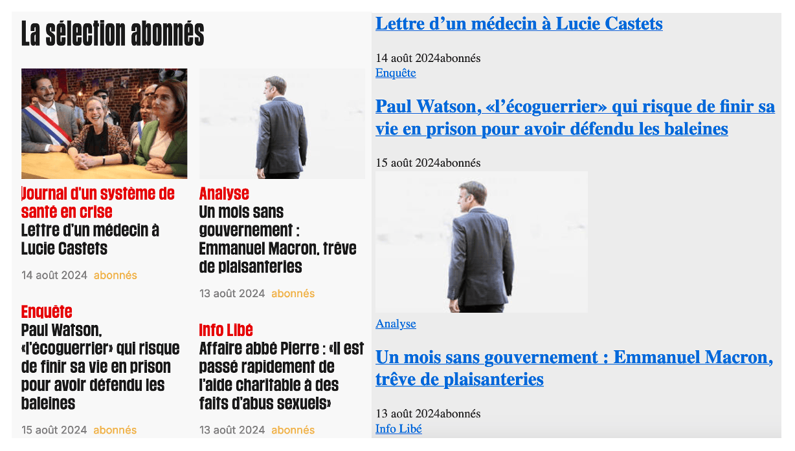
Sur Libération, les catégories sont situées avant le titre de l’article.
Les personnes aveugles qui naviguent par titre peuvent attribuer la mauvaise catégorie à l’article.
Aide à la détection : contenus compréhensibles CSS désactivées
Bookmarklet 0 Désactiver CSS
- Repérer dans la page (CSS activées) des contenus, dont l’ordre de succession pourrait poser des problèmes, par exemple une date avant un titre.
- Désactiver les feuilles de styles et vérifier que la succession des éléments est cohérente et logique (la date suit le titre par exemple).
Exemple conforme
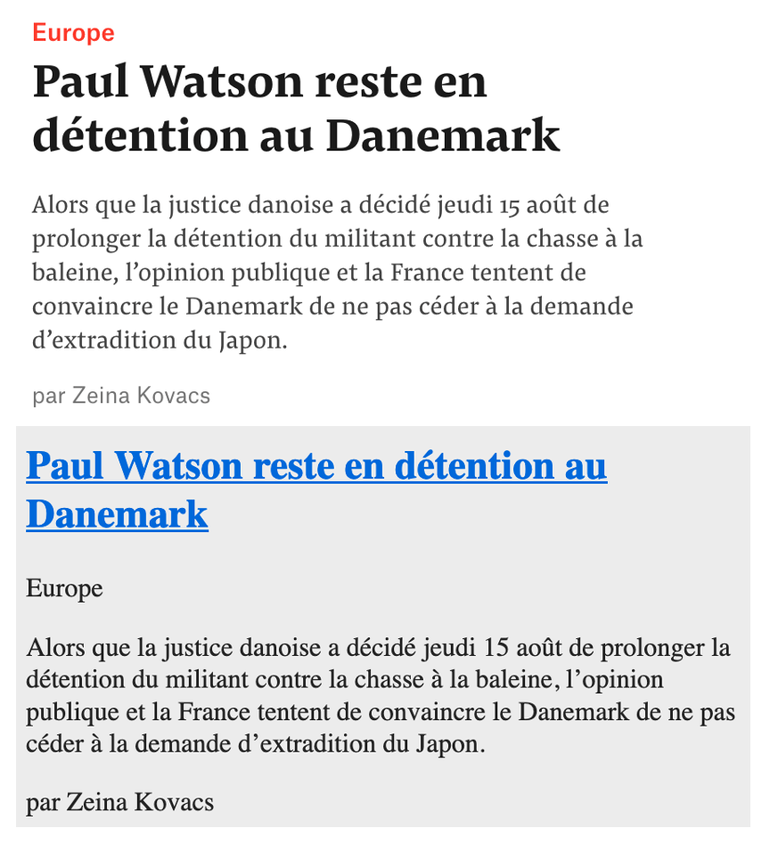
Sur Mediapart, la catégorie de l’article est située après le titre dans le code source et placée avant le titre visuellement.
Exemple non conforme
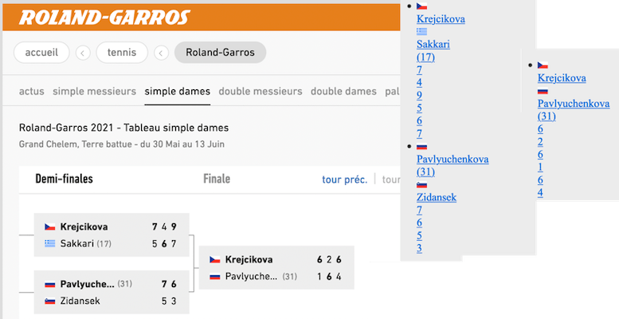
Sur le site lequipe.fr, la présentation des résultats de tennis est compréhensible uniquement avec la mise en forme. Une personne aveugle ne peut les comprendre, car le lecteur d’écran lira simplement une succession de chiffres non structurée.
Exemple conforme
Dans la page de présentation d’Orejime, le gestionnaire de cookies est le premier élément du code source bien qu’il soit positionné visuellement en base de page.
Couleur de fond et de police [AA]
- Si une couleur de police est déclarée, alors une couleur de fond est déclarée ou héritée d’un parent.
- Inversement, si une couleur de fond est déclarée, alors une couleur de police est déclarée ou héritée d’un parent.
- Référence RGAA :
- 10.5 [AA]
Exemple non conforme
Sur recrutement.bpce.fr, il y a plusieurs erreurs de déclarations de couleur de fond et de couleur de police.
Aide à la détection : couleur de fond et de police
Méthode 1 — inspection des CSS
- Rechercher dans les CSS si la balise
htmldispose d’une déclaration de couleur de police (color). - Si oui, si une déclaration de couleur de fond
background,background-colorest présente. - Sinon, descendre dans l’arborescence.
Exemple conforme
Sur l’élément body, une couleur de police est déclarée avec une couleur de fond.
Aide à la détection : couleur de fond et de police
Méthode 2 — Paramètre Couleurs Firefox
Visualiser rapidement des erreurs de déclaration en modifiant le paramètre Couleurs de Firefox.
- Dans les paramètres (about:preferences), section « Couleurs », sélectionner « Gérer les couleurs… ».
- Décocher l’option « Utiliser les couleurs système ».
- S’assurer que la liste de sélection « Outrepasser les couleurs spécifiées » est à « Jamais ».
- Valider et vérifier si les couleurs définies dans les paramètres Firefox s’appliquent.
Conseil : choisir des couleurs distinctives et facilement repérables.
Couleur de fond créée par une image [AA]
Images de fond (CSS background background-image, ou HTML), utilisées pour créer une couleur de fond pour du texte.
Elles doivent être accompagnées d’une couleur de fond (background-color) qui garantit un contraste conforme.
- Référence RGAA :
- 10.5 [AA]
Exemple non conforme
Sur la page d’accueil de marseille.fr, le fond du bloc « Vous cherchez un équipement dans Marseille ? » est créé avec une image.
Si elle n’est pas affichée, le texte blanc n’est plus suffisamment contrasté avec le fond.
Aide à la détection : images et couleur de fond
Bookmarklet 10.5 Désactiver les images
Repérer les textes dont les fonds ont disparu et vérifier que les contrastes sont conformes.
Agrandissement du texte [AA]
Le texte doit pouvoir être agrandi à 200 %, sans provoquer de perte d’information.
- Utilisation du zoom graphique du navigateur (Ctrl + 6 fois) ;
- Ou zoom texte : dans Firefox aller dans Affichage et choisir Zoom texte seul, puis agrandir à 200 %(Ctrl + 6 fois) ;
- Ou utilisation d’un dispositif d’agrandissement des caractères (boutons de type A+/A—).
Cas particuliers :
Textes en image et des sous-titres de vidéo.
Ressource : article de blog de Marie Guillaumet
- Référence RGAA :
- 10.4 [AA]
Exemple non conforme
Sur la page d’accueil de rouen.fr, à 200 % avec le zoom graphique, le lien "services et démarches" n’est plus atteignable à la souris.
Visibilité de la prise de focus [A]
La prise de focus au clavier doit être visible.
- La visibilité du focus du navigateur n’est pas dégradée ou supprimée par une propriété CSS (ex.
outline:0). - Ou, une indication de focus visible et suffisamment contrastée (respect du critère 3.3) est définie.
- Référence RGAA :
- 10.7 [A]
Exemple conforme
Sur le site data.gouv.fr, le style de focus défini par l’auteur (bordure bleue) est suffisamment contrasté avec les couleurs sur lesquelles il se superpose (rapport de contraste supérieur à 3).
Forcer l’état focus d’un composant interactif
Pour évaluer le contraste de l’indicateur de la prise de focus, il peut être nécessaire de forcer l’état afin de pouvoir évaluer si la propriété outline est dégradée ou pour récupérer les couleurs à la pipette.
- Dans Firefox et Chrome, activer l’inspecteur et se positionner dans le code, sur l’élément interactif.
- Dans le panneau de droite de l’inspecteur, onglet "Règles", activer ":hov".
- Cocher les cases
:focus:focus-visibleetfocus-within.
Visibilité des liens en environnement de texte [A]
Liens qui sont intégrés dans une phrase ou un paragraphe et dont la nature n’est pas évidente : identifiés uniquement par la couleur. Si le lien est souligné, le critère est NA.
S’assurer que ces liens peuvent être perçus par les personnes qui ont des troubles de la vision, des difficultés de perception des contrastes.
- Contraste suffisant par rapport au texte environnant (>3 par rapport au texte environnant).
- Indication supplémentaire autre que la couleur pour le survol (changement de curseur) et la prise de focus.
- Référence RGAA :
- 10.6 [A]
Exemple non conforme
Sur les pages articles de blogdecodesign.fr, les liens en environnement de texte sont identifiés uniquement par la couleur (Mike Perry, outdoorzgallery).
Le rapport de contraste entre la couleur des liens et du texte est suffisant (5,4), mais au focus il n’y a aucun changement.
Aide à la détection : liens en environnement de texte
Bookmarklet 10.6 Liens environnement de texte
- Repérer les liens en environnement de texte identifiés uniquement par la couleur et dont la nature n’est pas évidente.
- Vérifier le contraste entre la couleur du lien et la couleur du texte environnant (3:1 au moins).
- Vérifier la présence d’une indication visuelle autre que la couleur (soulignement, gras, etc.) pour les états au survol et au focus.
Contenus cachés [A]
Les contenus cachés n’ont pas vocation à être disponibles pour les technologies d’assistance.
Contenu caché en CSS :
display:none(cas typique des cases à cocher ou boutons radio)visibility:hiddenfont-size:0
Contenu caché en HTML :
aria-hidden="true"hidden
- Référence RGAA :
- 10.8 [A]
Exemple non conforme
Sur la page d’accueil de booking.com, les boutons permettant la navigation dans certains carrousels sont intégrés dans des conteneurs masqués avec aria-hidden="true". Les utilisateurs aveugles et de commande vocale ne pourront jamais activer ces composants.
Exemple non conforme
Sur le site auto.activeassurances.fr, dans le formulaire de simulation, les boutons radio sont cachés en CSS (display:none) pour créer un effet de style. L’étiquette est cliquable et activable au clavier, mais n’a pas un rôle pertinent.
Pour corriger, on pourra recommander la suppression de l’attribut tabindex="0" sur les éléments <label> et de la propriété CSS display:none sur les cases à cocher et boutons radio à positionner hors écran. Il n’est pas possible de simplement ajouter un rôle ARIA sur la balise <label> (usage interdit de la propriété role sur cet élément).
Aide à la détection : contenus cachés
Repérer les contenus masqués avec hidden et aria-hidden="true" et vérifier s’ils doivent être rendus accessibles ou non.
Note : le bookmarklet ne met pas en évidence les éléments masqués avec CSS.
Information par la forme, la taille ou la position [A]
Il existe une alternative dans la page ou sur l’élément lui-même (par exemple avec un attribut title).
Exemples : mise en gras pour véhiculer un état (importance, hiérarchie, etc.), un symbole pour informer d’un statut (présent, disponible, absent…), une instruction ("dans la colonne de droite").
Exemple non conforme
Sur le site malt.fr, dans les pages de résultats, le potentiomètre de choix du tarif/jour est associé à un histogramme qui permet de déterminer les disponibilités pour chaque plage de prix.
C’est la hauteur (la forme) du bâton qui détermine l’estimation des disponibilités. Cette information n’est pas disponible sous forme textuelle.
Une personne aveugle n’a pas accès ces informations.
Linéarisation des contenus [AA]
Les contenus doivent pouvoir être présentés à l’utilisateur sans utilisation des deux ascenseurs et sans perte d’information :
- dans une fenêtre de largeur réduite à 320 px pour les contenus dont le sens de consultation est vertical ;
- dans une fenêtre de hauteur réduite à 256 px pour les contenus dont le sens de consultation est horizontal.
Cas particuliers :
Tableaux de données, images, graphiques, vidéos, cartes, jeux, présentation (diaporama).
Important : ce critère ne teste pas l’utilisation mobile, mais le zoom à 400 % dans une fenêtre de 1280px. Voir Understanding SC 1.4.10: Reflow.
- Référence RGAA :
- 10.11 [AA]
Exemple conforme
Le contenu et les fonctionnalités de la page d’accueil de communaute-paysbasque.fr restent disponibles dans une fenêtre de 320px de large, sans l’utilisation de l’ascenseur horizontal.
Aide à la détection : linéarisation des contenus
Vue adaptative de Firefox :
- Windows :
Ctrl + Maj + M - MacOS :
option + Cmd + M
Firefox permet de sauvegarder plusieurs options d’affichage.
Adaptation des textes [AA]
Les textes doivent rester lisibles dans les conditions suivantes :
- espacement entre les lignes augmenté de 1,5 fois la taille de police ;
- marge entre paragraphes (
margin-bottom) augmentée de 2 fois la taille de police ; - espacement des lettres (
letter-spacing) augmenté jusqu’à 0,12 fois la taille de la police ; - espacement des mots (
word-spacing) augmenté jusqu’à 0,16 fois la taille de la police ;
Cas particuliers :
Sous-titres incrustés, images-texte, texte dans une balise canvas.
- Référence RGAA :
- 10.12 [AA]
Exemple non conforme
Sur la page d’accueil de Gallica, l’application des paramètres de mise en forme provoque des chevauchements de contenus qui rendent illisibles certaines informations.
Aide à la détection : adaptation des textes
Bookmarklet 10.12 Espacement
- Tester la page dans une fenêtre de 1280 px avec les CSS activées.
- Vérifier que tous les textes restent lisibles.
Penser aux contenus à l’intérieur des menus, fenêtres modales, accordéons, carrousels…
Exemple conforme
Sur le site Les Jours, le texte reste lisible sans chevauchement après l’application des paramètres de mise en forme.
Contrôle des contenus additionnels au survol ou à la prise de focus [AA]
Les contenus qui apparaissent à la prise de focus ou au survol d’un élément doivent être contrôlables par l’utilisateur :
- Si le contenu additionnel masque un autre contenu informatif, le contenu additionnel doit pouvoir être masqué sans déplacer le focus ou le pointeur : par ex.
[ESC]. - Le contenu doit pouvoir être survolé sans disparaître.
- Le contenu doit rester visible tant que le composant déclencheur ou le contenu lui-même est actif.
Cas particuliers :
Composants gérés par le navigateur (title).
- Référence RGAA :
- 10.13 [AA]
Exemple non conforme
Sur le site eesc.europa.eu, les sous-menus affichés au survol ne peuvent pas être masqués avec la touche ESC.
Aide à la détection : contenus additionnels
- Survoler l’ensemble de l’interface à la souris pour découvrir les éléments qui apparaissent au survol.
- Parcourir l’ensemble de l’interface avec la touche tab pour découvrir les éléments qui apparaissent à la prise de focus.
- Vérifier que les contenus additionnels peuvent bien être fermés avec la touche ESC.
Affichage des contenus additionnels au clavier [AA]
Les contenus qui apparaissent au survol d’un élément, au moyen de CSS, doivent apparaître également au clavier :
- directement à la prise de focus d’un composant ;
- ou à l’activation d’un composant ou d’une fonctionnalité.
- Référence RGAA :
- 10.14 [AA]
Exemple non conforme
Sur lelynx.fr, le survol des liens du menu déclenche l’apparition des sous-menus. Ces contenus ne peuvent pas être rendus visibles au clavier.
Aide à la détection : contenus additionnels au clavier
- Survoler l’ensemble de l’interface à la souris pour découvrir les éléments qui apparaissent au survol.
- Vérifier que les éléments peuvent être rendus visibles en naviguant exclusivement au clavier (focus ou activation d’un composant).
Exemple conforme
Sur ebay.fr, le lien "Mon eBay" déclenche l’apparition d’un sous-menu au survol. Au clavier, c’est l’action sur le bouton "Développer mon eBay" (qui n’apparaît qu’à la prise de focus) qui permet d’afficher le sous-menu.
Exercice
Traiter la thématique « Présentation de l’information » du RGAA.
Site d’exercice
Tableaux
- 8 critères niveau [A]
Tableaux de mise en forme [A]
- Sur l’élément
<table>, présence d’unrole="presentation"(ourole="none") qui supprime la sémantique de tableau. - Pas de balises ou d’attributs de tableaux de données
<th>,<thead>,<tfoot>,<caption>scope, headers, colgroup, axis,role="rowheader", role="columnheader".
Si HTML4, absence desummaryou attribut vide. - Le contenu reste compréhensible si le tableau est linéarisé
Exemple conforme
Dans l’en-tête de la page ebay.fr, le logo et le formulaire de recherche sont intégrés dans un tableau de présentation.
Il possède un role="presentation", n’a aucun attribut ni balise de tableau de données et le contenu linéarisé est compréhensible.
Aide à la détection : tableaux de mise en forme
Bookmarklet 05 Tableaux
- Parmi les tableaux entourés, repérer les tableaux de présentation.
- Vérifier la présence du
role="presentation"et l’absence des balises et attributs propres aux tableaux de données. - Vérifier si le contenu reste compréhensible si le tableau est linéarisé.
Exemple non conforme
Le menu et le pied de page du site de la ville de Marguerittes sont tous les deux structurés dans un tableau de présentation qui ne possède pas de role="presentation".
<table role="presentation">
<tr>
<td>
<p>Retrouvez nos vidéos d’informations !…</p>
</td>
</tr>
</table>
En supprimant la sémantique du tableau avec le role="presentation", les textes contenus dans le tableau, s’ils n’ont pas de sémantique, contreviennent alors au critère 8.9 (détournement de balisage).
Il est nécessaire de redonner de la structure aux textes (titres, paragraphes, listes…) dans ces cas.
Tableaux de données [A]
- Titre pour identifier le contenu :
<caption>(implémentation recommandée), attributstitleetaria-labelou balise associée au tableau avecaria-labelledby. - Identification des entêtes
<th> - Si plus d’une ligne ou colonne d’entêtes
<th scope="col">et<th scope="row">
Exemple conforme
Les tableaux du site insee.fr possèdent un titre pertinent dans une balise <caption> (note : cet élément sera par contre non conforme sur le 10.8, car le texte est en font-size:0). Les entêtes sont implémentés dans des balises <th scope="col"> et <th scope="row">.
Aide à la détection : tableaux de données
Bookmarklet 05 Tableaux
- Parmi les tableaux entourés, repérer les tableaux de données.
- Pour chaque tableau de données qui possède un titre visible, vérifier que le titre est correctement associé au tableau et évaluer sa pertinence.
- vérifier la présence des cellules
<th>et de l’attributscopesi nécessaire.
<p id="titre">Parc et fréquentation des autres hébergements collectifs touristiques en 2018</p>
<div role="table" aria-labelledby="titre">
<div role="row">
<div role="columnheader">Type d’hébergement professionnel</div>
<div role="columnheader">Nombre d’établissements</div>
[...]
</div>
<div role="row">
<div role="cell">Résidences de tourisme</div>
<div role="cell">2 426</div>
[...]
</div>
</div>Tableaux complexes [A]
Complexe si : plus d’une ligne ou colonne d’en-tête pour une cellule de données, lorsque la portée d’un en-tête n’est pas valable pour l’ensemble de la colonne ou ligne, fusion de cellules, etc.
Présence d’un résumé pour expliquer l’organisation du tableau avec l’élément <caption>.
Dans le cas d’un tableau ARIA, le résumé peut être intégré avec aria-describedby.
Exemple non conforme
Les tableaux complexes du site insee.fr ne possèdent pas de résumé.
Solution de correction
Note : Les tableaux complexes sont problématiques pour les utilisateurs aveugles mais également pour certains utilisateurs voyants qui ont un trouble cognitif (par exemple, la dyspraxie). Pour cette raison, il est toujours préférable de laisser le résumé visible pour tous les utilisateurs.
<caption>
Figure 2 — Répartition des déchets non dangereux non minéraux hors boues de l’industrie manufacturière par type en 2016
<span>
Les industries agroalimentaires (IAA) et les industries manufacturières (hors IAA) sont présentées sur 2 colonnes, avec, pour chacune d’elles la quantité en milliers de tonnes le pourcentage. Une troisième colonne présente le total des deux industries, en milliers de tonnes et en pourcentage.
</span>
</caption>
Tableaux complexes [A]
Lier les cellules à leurs en-têtes
- identification des entêtes
<th> - attribut
idunique sur chaque entête - attribut
headerssur chaque cellule de données, qui référence chaque identifiant qui lui est lié.
Exemple : headers="id_1 id_2".
- Référence RGAA :
- 5.7 [A]
<tr>
<td aria-hidden="true"></td>
<th id="entete1" colspan="2">Industries agroalimentaires (IAA)</th>
<th id="entete2" colspan="2">Industries manufacturières (hors IAAA)</th>
<th id="entete3" colspan="2">Ensemble</th>
</tr>
<tr>
<td aria-hidden="true"></td>
<th id="entete4">Quantités (en milliers de tonnes)</th>
<th id="entete5">en %</th>
<th id="entete6">Quantités (en milliers de tonnes)</th>
<th id="entete7">en %</th>
[...]
</tr>
<tr>
<th id="entete-dechets">Déchets banals</td>
<td headers="entete-dechets entete1 entete4">1 147</td>
<td headers="entete-dechets entete1 entete5">31</td>
<td headers="entete-dechets entete2 entete6">9 795</td>
<td headers="entete-dechets entete2 entete7">97</td>
[..]
</tr>Aide à la détection : tableaux complexes
Bookmarklet 05 Tableaux
- Parmi les tableaux entourés, repérer les tableaux complexes.
- Vérifier la présence dans le titre du tableau, d’un résumé (et contrôler sa pertinence).
- Vérifier la présence sur les entêtes d’un attribut
id. - Vérifier la présence sur les cellules de données d’un attribut
headersdont le ou les identifiants correspondent bien aux entêtes
(le bookmarkelt identifie les valeurs d’identifiants absent dans la page et référencés dans les attributsheadersen les précédant d’un "⛔".)
Exemple conforme
Les attributs headers référencent des id qui n’existent pas dans la page. Les cellules n’ont pas d’entêtes reliés.
Exercice
Traiter la thématique « Tableaux » du RGAA.
Site d’exercice
Structuration de l’information
- 4 critères niveau [A]
Titrage du contenu [A]
On vérifie 3 éléments pour les titres :
- Hiérarchie cohérente (imbrication des niveaux de titres, l’imbrication respecte la logique du contenu) ;
- Titres pertinents ;
- Tous les titres nécessaires.
Les cas suivants ne constituent pas une non-conformité : l’absence de titres, l’absence de h1, une hiérarchie qui ne débute pas par un h1, plusieurs h1, les sauts hiérarchiques (passer de h1 à h3 par exemple).
Ressources :
- a11y-outline (extension Firefox permettant d’afficher la liste des titres notamment, pour permettre aux utilisateurs claviers de naviguer par titre)
- HeadingsMap (extension Firefox pour visualiser la hiérarchie)
- En-têtes et non-conformité aux WCAG : une clarification à juste titre
- Référence RGAA :
- 9.1 [A]
Exemple non conforme
Dans les pages de résultats de recherche de google.com, la hiérarchie des titres n’est pas pertinente. Le titre « À la une » titre correctement les deux contenus suivants (visuellement regroupés au-dessus du lien "Plus d’actualités", et utilisant des titres de niveau 4, donc de niveau inférieur au titre « À la une »). Par contre, le contenu et le titre « L’accessibilité | Gouvernement.fr » ne fait pas partie de cette section « À la une », il ne devrait pas être de niveau 3, mais plutôt de niveau 2.
Aide à la détection : titres
Outil HeadingsMap
- Activer l’extension HeadingsMap.
- Activer l’option « afficher les titres » dans l’extension
- Évaluer la hiérarchie des titres.
Configuration de HeadingsMap (dans l’onglet "Hiérarchie des titres" des paramètres de l’extension) :
- « Afficher une erreur si pas de h1 initial » : ne pas cocher
- « Afficher les titres vides » : cocher
- « Masquer les outils (recherche, etc.) » : ne pas cocher
- « Afficher le niveau de titre » : cocher
- « Afficher les titres masqués » : ne pas cocher
Exemple non conforme
Sur le site marsbar.ca, les titres des produits sont des <h2> mais devraient être des <h3> puisqu’ils dépendent du titre précédent "Nos produits" lui-même <h2>.
<h1>Accueil…</h1>
<h2>Actualités…</h2>
<div role="heading" aria-level="3">Où en est-on ?</div>
<div role="heading" aria-level="3">Ils arrivent bientôt !</div>Listes [A]
Les suites d’éléments (items, liens, etc.) doivent être structurées en listes. Une structure de liste est impérative pour toutes les suites de liens.
- listes non ordonnées
<ul> <li> - listes ordonnées
<ol> <li> - listes de définition
<dl> <dt> <dd> -
role="list"&role="listitem"
- Référence RGAA :
- 9.3 [A]
Exemple non conforme
Sur le site de larousse.fr, la suite de liens du pied de page n’est pas implémentée dans un élément de liste.
Exemple conforme
Sur la page d’accueil de april-moto.com, les suites de liens du pied de page sont correctement structurées dans des éléments de liste.
<ul>
<li>Favoriser l’information…</li>
<li>Permettre aux personnes…</li>
</ul>
<ol>
<li>Favoriser l’information…</li>
<li>Permettre aux personnes…</li>
</ol>
<div role="list">
<div role="listitem">Favoriser l’information…</div>
<div role="listitem">Permettre aux personnes…</div>
</div>
<dl>
<dt>Terme à définir…</dt>
<dd>Définition…</dd>
<dt>...</dt>
<dd>...</dd>
</dl>
<div role="list">
<div role="term">Terme à définir…</div>
<div role="definition"> Définition… </div>
<div role="term">...</div>
<div role="definition">...</div>
</div>
Aide à la détection : listes
Bookmarklet 09.3 Listes
- Désactiver les CSS puis activer le bookmarklet.
- Repérer les successions d’éléments, particulièrement les suites de liens, et vérifier qu’ils sont implémentés dans des éléments de listes.
- Vérifier que la sémantique des listes est préservée quand c’est nécessaire (pas de
role="presentation"sur les éléments<ul> <li>par exemple).
Exemple non conforme
Sur le site de groupama.fr, la suite de liens en haut de page n’est pas implémentée dans un élément de liste.
Exemple non conforme
Dans un article de lequipe.fr, le texte en italique « La qualification du Real Madrid en demi-finale ouvre ... » est un bloc de citation, mais n’est pas identifié dans le code source.
Aide à la détection : citation
Bookmarklet 09.4 Citations
- Repérer les citations en lignes et les blocs de citations dans le contenu, et vérifier qu’ils sont implémentés dans l’un des deux éléments de citations.
Exemple non conforme
Sur le site de a.anglet.fr, les citations dans les pages de contenu ne sont pas identifiées.
La structure du document (HTML5) [A]
Identifier les régions principales de la page (entête, navigation, contenu principal, pied de page) à l’aide des balises sémantiques.
Cas particuliers :
Lorsque le doctype déclaré dans la page n’est pas le doctype HTML5, ce critère est non applicable.
- Référence RGAA :
- 9.2 [A]
<nav>
[A]
Plusieurs éléments <nav> peuvent être présents sur la page. Chaque élément doit identifier un élément de navigation dans le site, parmi :
- éléments de navigation principaux : navigation principale, secondaire, navigation contextuelle
- navigation dans les collections de pages, pagination
- les liens d’accès rapide
- le fil d’Ariane
- table des matières
Une balise <nav> utilisée sur un autre type de contenu est une non-conformité.
- Référence RGAA :
- 9.2 [A]
Exemple conforme
Sur le site insee.fr la navigation principale et le fil d’Ariane sont implémentés dans une balise <nav>.
<header>
[A]
Plusieurs balises <header> peuvent être utilisées dans la page. On vérifie que l’en-tête principal du site au moins soit dans une balise <header>. On n’évalue pas les autres.
- Obligatoire pour l’entête du document
- Peut contenir des titres, de la navigation
- Référence RGAA :
- 9.2 [A]
Exemple conforme
Sur le site insee.fr l’entête principal est implémenté dans une balise <header>.
<footer>
[A]
Plusieurs balises <footer> peuvent être utilisées dans la page. On vérifie que le pied de page principal du site au moins soit dans une balise <footer>. On n’évalue pas les autres.
- Obligatoire pour le pied de page du document
- Référence RGAA :
- 9.2 [A]
Exemple conforme
Sur le site insee.fr le pied de page principal est implémenté dans une balise <footer>.
<main> [A]
Regroupement du contenu principal de la page
(les éléments répétés - navigation, publicité - ne devraient pas être structurés avec)
- Obligatoire
- et unique dans la page
- Référence RGAA :
- 9.2 [A]
Exemple conforme
Sur le site insee.fr le contenu principal est implémenté dans une balise <main>.
Aide à la détection : structure du document
Bookmarklet 09.2 12.6 Structure
Vérifier que :
- l’entête principal est intégré dans une balise
<header>. - le menu principal est intégré dans une balise
<nav>. - les autres systèmes de navigation (fil d’ariane par exemple), s’ils sont présents, sont intégrés dans une balise
<nav>. - les balises
<nav>ne sont pas utilisées pour structurer des contenus qui ne sont pas des systèmes de navigation (par exemple, une liste de liens externes au site). - le contenu principal est intégré dans une balise
<main>et que la balise est unique dans la page. - le pied de page est intégré dans une balise
<footer>.
Exemple non conforme
Sur le site de a.anglet.fr, la liste de liens vers les réseaux sociaux est intégré sans dans une balise <nav>, or cette liste ne constitue pas un élément de navigation dans le site.
Exercice
Traiter la thématique « Structuration » du RGAA : Site d’exercice
Multimédia
- 11 critères niveau [A]
- 4 critères niveau [AA]
Identification [A]
Le contenu multimédia doit être précédé ou suivi d’un texte permettant de l’identifier.
- Référence RGAA :
- 4.7 [A]
Exemple conforme
Sur le site petitlouvre.louvre.fr, les vidéos de la section « Histoires » ont toutes un titre et un sous-titre qui permettent d’identifier le contenu de la vidéo.
Les différentes caractéristiques des médias
Média temporel VS non temporel
- Média temporel : qui se déroule dans le temps (une vidéo)
- Média non temporel : qui ne se déroule pas dans le temps, consultable via un plugin (Flash, Java, Silverlight…) ou via les éléments
svgetcanvas
Types de média temporels
- Seulement audio : contenu sonore (podcast) ;
- Seulement vidéo : dont seul le contenu visible est porteur d’information (le média ne possède pas de bande-son, par exemple un film muet) ;
- Synchronisé : dont le contenu visible et sonore est porteur d’information.
En direct vs Pré-enregistré
Transcription textuelle [A]
Une transcription textuelle est un texte structuré (texte html, document bureautique), qui reprend :
- les informations sonores ;
- les éléments visuels incrustés porteurs d’informations (textes incrustés, actions...).
La transcription textuelle est mise à disposition :
- de manière adjacente (un texte placé directement sous le contenu multimédia par exemple)
- via un lien ou un bouton adjacent.
Dans le cas d’un média seulement vidéo, il est possible de mettre une version sonore à disposition (AD longue) à la place de la transcription textuelle.
Cas particuliers :
Média décoratif, alternative à un contenu de la page, média utilisé comme un CAPTCHA.
Exemple conforme
Sur le petitlouvre.louvre.fr, toutes les vidéos de la section « Histoires » ont une transcription textuelle disponible en téléchargement sous la forme d’un document bureautique accessible.
On y retrouve les descriptions des éléments visuels d’intérêt dans la vidéo et l’ensemble du contenu audible.
Exemple conforme
Sur le site access42.net, les transcriptions textuelles sont mises à disposition directement après les vidéos avec un système afficher/masquer.
Exemple conforme
Sur le site fiphfp.fr, certaines vidéos ont des sous-titres synchronisés.
Sous-titres [A]
Dans le cas d’une vidéo embarquée avec la balise HTML5 <video>, la balise <track> qui embarque les sous-titres doit être correctement définie comme étant la piste des sous-titres pour sourds et malentendants (closed captions, CC), et non pas comme sous-titres de traduction (subtitles).
<video>
<track kind="captions" label="Français" src="stitre.srt" />
</video>kind="subtitles" dédié aux sous-titres de traduction.
- Référence RGAA :
- 4.3 [A]
Exemple conforme
Le lecteur Able Player intègre la piste des sous-titres avec la propriété kind="captions".
Audiodescription [AA]
Narration ajoutée (via un fichier son) à une piste sonore pour décrire les détails visuels importants qui ne peuvent être compris à partir de la piste sonore principale seulement.
Elle doit comprendre la description des actions visibles et porteuses d’information ou encore les informations visuelles (textes incrustés par exemple).
Elle ne peut être requise que si la bande-son principale dispose de suffisamment d’espaces libres pour y insérer un contenu audio supplémentaire. Sinon, le critère est non applicable.
Mise à disposition :
<audio>synchronisé avec la vidéo- ou deux versions de la même vidéo (avec et sans audiodescription)
Exemple conforme
youtube.com dispose d’une fonctionnalité expérimentale qui offre la possibilité d’ajouter plusieurs pistes audio aux vidéos, permettant ainsi d’avoir une piste standard et une piste avec l’audiodescription. Cette fonctionnalité n’est pas ouverte au public.
Média temporel compatible avec l’accessibilité [A]
- Les contrôles obligatoires sont présents : lecture, pause (ou stop), contrôle du volume du son (activation/désactivation), contrôle des sous-titres, contrôle de l’audiodescription
- Les contrôles doivent avoir un nom pertinent mises à jour des noms (par exemple play/pause)
- Les valeurs mises à jour sont accessibles aux technologies d’assistance (ligne du temps, contrôle du volume sonore)
- Le média est contrôlable au clavier et à la souris.
Le lecteur YouTube, bien que présentant quelques erreurs, ne présente aucun défaut majeur d’accessibilité. Il est considéré compatible avec l’accessibilité.
Lecteurs vidéo conformes : VIDEO JS, Able Player, BrightCove.
Exemple conforme
Le site dcmp.org emploie un script de lecteur vidéo accessible (BrightCove).
Anatomie d’un lecteur multimédia accessible
Exemple de démo du lecteur Able Player
- Les contrôles lecture, avance, etc. sont des boutons et ont un nom accessible pertinent (et les changements d’état sont pertinents : le nom du bouton lecture/pause est modifié à chaque activation pour être synchronisé avec la fonction associée) ;
- La ligne du temps et le contrôle du volume sonore implémentent le motif de conception ARIA Slider ;
- Le lecteur est pleinement utilisable au clavier et à la souris.
Son déclenché automatiquement [A]
Les sons déclenchés automatiquement doivent être contrôlables par l’utilisateur, sauf si la durée est inférieure à 3 secondes.
L’utilisateur peut :
- Stopper le média
- ou contrôler le volume sonore indépendamment du volume système.
Cette problématique impacte fortement les utilisateurs aveugles qui naviguent avec un lecteur d’écran avec sortie vocalisée et les utilisateurs avec un trouble de l’attention.
Le contrôle permettant de couper le son devrait être de préférence le premier élément de la page.
- Référence RGAA :
- 4.10 [A]
Exemptions
Le décret 2019-768 du 24 juillet 2019 prévoit des exemptions pour certains contenus multimédias. Les contenus concernés ne sont pas soumis à l’obligation d’accessibilité, aucune non-conformité ne peut être relevée. Il faudra néanmoins les citer dans la déclaration d’accessibilité.
Sont exemptés :
- Les contenus audio et vidéo préenregistrés, y compris ceux comprenant des composants interactifs, publiés avant le 23 septembre 2020 ;
- Les contenus audio et vidéo diffusés en direct, y compris ceux comprenant des composants interactifs ;
Exemple non conforme
Le site Prezi met à disposition des animations dans des éléments <canvas> sans alternative.
Consultation
- 12 critères niveau [A]
Rafraîchissements et redirection [A]
Rafraîchissement : modification du contenu d’un ou plusieurs éléments de la page ou de la page complète.
Sauf si la limite entre 2 rafraîchissements, ou avant la redirection, est de 20 heures, l’utilisateur doit pouvoir :
- arrêter et relancer le rafraîchissement (la redirection) ;
- augmenter la limite de temps entre deux rafraîchissements (avant la redirection) de dix fois, au moins ;
- être alerté de l’imminence d’un rafraîchissement (de la redirection) et pouvoir augmenter le délai de 10 fois au moins.
Cas particuliers :
Limite de temps essentielle (cas typiques des systèmes de réservation hôtel/train/avion).
- Référence RGAA :
- 13.1 [A]
Cas des redirections avec la balise <meta> : elles doivent être immédiates.
En HTML, on peut détecter certains types de rafraîchissement de pages en recherchant la balise meta http-equiv.
<meta http-equiv="refresh" content="9000">Les rafraîchissements peuvent concerner les balises <object>, balise <embed>, balise <svg>, balise <canvas>.
Limite de temps de session [A]
- L’utilisateur peut supprimer la limite de temps.
- L’utilisateur peut augmenter la limite de temps.
- La limite de temps avant la fin de la session est de vingt heures au moins.
Cas particuliers :
Limite de temps essentielle (cas typiques des systèmes de réservation hôtel/train/avion).
- Référence RGAA :
- 13.1 [A]
Exemple conforme
Sur ce site, 30 secondes avant la fin de la session, une alerte apparaît qui annonce la fin imminente et laisse le choix à l’utilisateur de prolonger la session ou la stopper.
Nouvelles fenêtres [A]
Pas de nouvelles fenêtres sans action de l’utilisateur (clic à la souris, activation au clavier).
Aide à la détection
- Vérifier qu’en naviguant exclusivement au clavier (touche
tab), sans jamais activer la toucheEntréeouEspace, aucune nouvelle fenêtre ne s’ouvre (par exemple, à la perte de focus d’un lien ou d’un bouton). - Observer également le comportement de la page et vérifier qu’aucune page ne s’ouvre pendant la consultation.
- Référence RGAA :
- 13.2 [A]
Documents bureautiques en téléchargement [A]
- Soit le document est accessible ;
- Soit le document dispose d’une alternative accessible (HTML, .doc, .odt structuré) reprenant les mêmes informations.
Ressources :
Exemple non conforme
Dans Adobe Reader, il est possible de voir si un PDF possède un titre et s’il est balisé dans les propriétés du document. Un PDF non balisé ne sera pas correctement lu par un lecteur d’écran.
L’outil PAC 2024 permet d’évaluer automatiquement quelques critères d’accessibilité (les contrastes, la structure, les alternatives d’images…). L’outil propose également la fonctionnalité « Aperçu du lecteur d’écran » qui permet d’avoir une vue de la structuration du contenu (vue des listes, liens, titres, etc.).
Aide à la détection : documents bureautiques
Bookmarklet 13.3 Documents
- Repérer les documents bureautiques en téléchargement mis en évidence.
- Vérifier que la version accessible du document si elle existe contient les mêmes informations.
- Vérifier l’accessibilité des documents (titre, balisage, contrastes, structuration, alternatives d’images…).
D’autres fonctionnalités (champ de formulaire, bouton…) permettent aussi le téléchargement de document. Il est nécessaire d’interagir avec la page pour le découvrir.
Exemple conforme
Sur le site communaute-paysbasque.fr, une alternative accessible au format Word est proposée.
Exemptions
Le décret 2019-768 du 24 juillet 2019 prévoit des exemptions pour les fichiers disponibles dans des formats bureautiques. Les contenus concernés ne sont pas soumis à l’obligation d’accessibilité, aucune non-conformité ne peut être relevée à leur encontre. Il faudra néanmoins citer ces contenus exemptés dans la déclaration d’accessibilité.
Sont exemptés : Les fichiers disponibles dans des formats bureautiques publiés avant le 23 septembre 2018.
Important : si le document est nécessaire à l’accomplissement d’une démarche administrative relevant des tâches effectuées par l’organisme concerné, il doit être rendu accessible.
Effet de flash [A]
- La fréquence limite est inférieure à 3 flashs/sec.
- OU la surface cumulée est inférieure ou égale à 21824 pixels.
- Référence RGAA :
- 13.7 [A]
Aide à la détection : effet de flash
Photosensitive Epilepsy Analysis Tool (PEAT) est un outil open source (compatible Windows uniquement) qui permet d’évaluer la fréquence des flashs.
- Faire une capture vidéo de la zone à évaluer.
- Convertir la vidéo au format
.avi(tutoriel de conversion avec FFmpeg (en anglais)). - Ouvrir le fichier (File > Open Video Clip) et lancer l’analyse (Analysis > Analyze Video).
Sur cet extrait vidéo, PEAT remonte plusieurs erreurs.
Clignotement et contenus en mouvement [A]
Le contenu en mouvement ou clignotant doit pouvoir :
- être arrêté et relancé ;
- ou être masqué et ré-affiché ;
- ou être affiché sans le mouvement ;
- ou doit faire 5 secondes ou moins.
Chaque contenu doit pouvoir être contrôlé de manière indépendante.
- Référence RGAA :
- 13.8 [A]
Exemple non conforme
Les vignettes de la série Conspiration sur Les Jours sont animées et ne peuvent jamais être arrêtées.
Exemple conforme
Sur la page d’accueil du Louvre, la vidéo de fond peut être stoppée.
Sur le site deuxfleurs.fr, les caractères de ponctuation qui servent à créer les images ASCII sont masqués avec aria-hidden="true".
Une alternative est donnée avec un role="img" et la propriété aria-label bien que l’image soit décorative.
Indépendance de l’orientation [AA]
- Le contenu doit être consultable, quelle que soit l’orientation du périphérique (portrait/paysage)
- Et le contenu proposé reste le même, quel que soit le mode d’orientation.
Cas particuliers :
Lorsque l’orientation est essentielle, par exemple interfaces de jeu vidéo, de piano, de dépôt de chèques bancaires.
- Référence RGAA :
- 13.9 [AA]
Exemple non conforme
Sur le site Decathlon — Magic Bike, l’orientation est forcée en paysage alors qu’elle n’est pas indispensable.
Activer la vue adaptative dans Firefox et Chrome
- Dans Firefox et Chrome, activer l’inspecteur et activer la vue adaptative avec le bouton dédié (à droite pour Firefox, à gauche pour Chrome) ou réaliser le raccourci clavier (
Ctrl+Maj+Msur Windows ouoption+command+Msur Mac) - Dans la barre d’outils du haut, choisir une taille d’écran smartphone et activer le bouton permettant de basculer l’orientation.
Gestes complexes [AA]
- gestes multipoints (ex. le pinch pour zoomer sur une carte)
- gestes basés sur une trajectoire (ex. le swipe)
Gestes simples : gestes à contact unique (activation d’un bouton)
Toutes les fonctionnalités déclenchées par un geste complexe peuvent être réalisées avec un geste simple.
Cas particuliers :
Gestes requis par l’agent utilisateur ou le système d’exploitation (scrollbar par exemple), geste complexe est essentiel (ex. une signature).
Erreurs courantes : défilement de carousel
- Référence RGAA :
- 13.10 [AA]
Annulation de l’action du pointeur [A]
Aucun événement ne doit être intercepté sur l’action descendante (down) du pointeur.
- L’action est déclenchée au moment où le dispositif de pointage est relâché ou relevé (fonctionnement standard des liens et boutons par exemple) ;
- L’action est déclenchée au moment où le dispositif de pointage est pressé ou posé puis annulée lorsque le dispositif de pointage est relâché ou relevé (boutons poussoirs) ;
- Un mécanisme est disponible pour abandonner (avant achèvement de l’action) ou annuler (après achèvement) l’exécution de l’action (drag’n drop).
Cas particuliers
Lorsque la fonctionnalité doit être déclenchée lors d’un événement descendant (un émulateur de clavier).
- Référence RGAA :
- 13.11 [A]
Exemple conforme
Sur le site gouvernement.fr, l’événement associé aux flèches de direction de la visite virtuelle est déclenché sur l’action descendante. Ces boutons de flèches émulent le comportement des flèches du clavier, il s’agit donc d’un cas particulier. Et pour les autres composants de l’interface, par exemple le bouton de localisation ou les éléments de réseaux sociaux : l’événement associé est bien déclenché sur l’événement remontant.
Aide à la détection : annulation de l’action du pointeur
- Repérer tous les composants interactifs (lien, boutons, boutons de formulaires).
- En procédant par échantillonnage, sur chacun faire clic gauche et laisser le bouton de la souris enfoncé. Glisser la souris en dehors de la zone interactive et relâcher le bouton droit de la souris.
- Si l’événement associé (ouverture de page web, déclenchement d’une fonctionnalité) est exécuté, le critère est non conforme. S’il ne se passe rien, le critère est conforme.
Activation par le mouvement [A]
Les fonctions qui sont déclenchées en déplaçant l’appareil (en secouant ou en basculant) ou lorsque l’utilisateur effectue un mouvement capté par les dispositifs de l’appareil (ex. une caméra) peuvent être :
- actionnées par des composants plus classiques (un bouton) ;
- et désactivées pour éviter un déclenchement accidentel.
Ces fonctionnalités peuvent être difficiles à identifier, il est préférable de questionner les équipes en amont de l’audit sur l’existence de telles fonctionnalités.
Cas particuliers
Mouvement essentiel à l’accomplissement de la fonctionnalité (ex. podomètre), la détection du mouvement est utilisée pour contrôler une fonctionnalité au travers d’une interface compatible avec l’accessibilité.
- Référence RGAA :
- 13.12 [A]
Exemple conforme
Un site utilise la fonctionnalité "Secouer pour annuler". Le déclenchement de la fonctionnalité par le mouvement peut être désactivé directement dans les paramètres système du terminal mobile.
Exercice
Traiter la thématique « Consultation » du RGAA.
Site d’exercice
Liens
- 2 critères niveau [A]
Minute glossaire
Les types de liens
- Lien texte : dont le seul contenu est du texte (aucune image présente)
<a href="page.html">aller à la page</a> - Lien image : dont le contenu (et donc l’intitulé) est une image
<a href="page.html"><img src="img.png" alt="aller à la page"/></a> - Lien composite : dont le contenu mêle du texte et une ou des images
<a href="page.html">aller à la page <img src="img.png" alt=""/></a>
Minute technique
Pour être considéré comme un lien, l’attribut href doit être présent : <a href="url.html">
Sans cet attribut, la balise sera présentée comme une ancre <a></a> : le rôle « lien » ne sera pas restitué par les technologies d’assistance.
Dans certains contextes de développement, on peut trouver des liens qui sont gérés en JavaScript et ne possèdent pas d’attribut href : <a tabindex="0">un lien</a>.
Bien qu’il reçoive la prise de focus, le rôle n’est toujours pas pertinent, il est nécessaire de demander l’ajout de la propriété role="link" : <a tabindex="0" role="link">un lien</a>
→ À relever sur le critère 7.1.
Liens vides [A]
Tous les liens doivent avoir un nom accessible.
Lorsque le lien est constitué uniquement d’une image, attention à la présence d’une alternative (ou autre moyen de nommage) pour créer l’intitulé du lien.
- Référence RGAA :
- 6.2 [A]
Exemple non conforme
Sur le site lacentrale.fr : les liens de réseaux sociaux en pied de page n'ont pas de nom accessible.
Exemple conforme
Sur le site communaute-paysbasque.fr, les liens des réseaux sociaux en pied de page ont tous un nom accessible.
Lien explicite 1/4 : nom accessible pertinent [A]
Lien explicite : le nom accessible du lien doit permettre de comprendre la fonction et la destination du lien.
Le nom accessible du lien peut être déterminé par :
aria-labelledby="@id"ouaria-label- contenu du lien (texte ou alternative de l’image)
- attribut
titlesur le lien
C’est cet ordre de priorité qui doit être utilisé pour déterminer ce qui constitue le nom accessible, c’est-à-dire, l’intitulé qui sera effectivement utilisé par les technologies d’assistance (lecteur d’écran, commande vocale).
Lien ambigu pour tout le monde : L’intention ne peut être déterminée à partir du lien [...] Jusqu’à ce que le lien soit activé, tout utilisateur est dans l’incertitude et une personne handicapée n’est donc pas désavantagée.
Ressources :
- Référence RGAA :
- 6.1 [A]
<a href="page.html">Connexion</a>👉 Nom accessible : « Connexion ». Le contenu du lien est le nom accessible.
<a href="page.html"><img src="img.png" alt="Connexion" /></a>👉 Nom accessible : « Connexion ». L’alternative de l’image contenue dans le lien constitue le nom accessible.
<a href="page.html" aria-label="Page de connexion à mon espace personnel"><img src="img.png" alt="Connexion" /></a>👉 Nom accessible : ,« Page de connexion à mon espace personnel » . Le contenu du lien n’est plus pris en compte dans le calcul du nom accessible, c’est le contenu de la propriété aria-label sur le lien qui constitue le nom accessible du lien.
Lien explicite 2/4 : nom visible contenu dans le nom accessible [A]
Lien explicite : le nom visible doit être contenu dans le nom accessible.
Le nom visible peut être :
- Le texte HTML visible (CSS activé)
- Le texte lisible d’une image contenue dans le lien
Ressources :
- Référence RGAA :
- 6.1 [A]
Exemple non conforme
Sur le site booking.com, le lien d’inscription a un nom visible « S’inscrire » et un nom accessible déterminé par la propriété aria-label qui une fois calculé donne « Créer un compte ». Le nom visible n'est pas repris dans le nom accessible.
Proposition de correction : Reprendre le nom visible dans la propriété aria-label, ou supprimer la propriété
<a href="..." aria-label="S'inscrire - Créer un compte">S'inscrire</a><a href="..." >S'inscrire</a>Exemple conforme
Sur le site data.gouv.fr : le lien data.gouv.fr contient un svg avec du texte lisible qui détermine son nom visible « data.gouv.fr ». Le nom accessible du lien est déterminé par la propriété aria-label="data.gouv.fr" présente sur la balise svg. Le nom accessible contient le nom visible.
Lien explicite 3/4 : rôle du contexte du lien [A]
L’intitulé de chaque lien peut être rendu explicite :
- par son intitulé texte seul (nom accessible) ;
- ou grâce à son contexte : titre précédent (ex.
<h2>), paragraphe, phrase,titleque les utilisateurs peuvent exploiter grâce aux fonctionnalités de leur technologie d’assistance.
Important : les liens aux intitulés identiques et qui mènent vers des pages différentes seront considérés non conformes, si le contexte des liens ne permet pas de les différencier.
Ressources :
- Référence RGAA :
- 6.1 [A]
Exemple non conforme
Sur le site fakirpresse.info, on trouve plusieurs liens « Tout voir » qui mènent vers des pages différentes. Aucun élément de contexte ne permet de les distinguer, en effet, les titres précédents sont les titres des actualités et non pas des catégories (ex. « Les livres »), ce qui ne permet pas de les rendre explicites.
Lien explicite 4/4 : infobulle de lien (title)
[A]
Lien explicite : si un lien possède une infobulle (attribut title), le texte de l’infobulle reprend au moins le nom accessible issu du contenu du lien.
On n’invalide pas : les title vides ou les title identiques aux noms accessibles.
- Référence RGAA :
- 6.1 [A]
Exemple 1 - Non conforme
<a href="..." title="3 nouveaux messages">Espace privé</a>👉 L’attribut title ne reprend pas l’information issue du contenu du lien ("Espace privé").
Exemple 2 - Conforme
<a href="..." title="Espace privé : 3 nouveaux messages">Espace privé</a>👉 L’attribut title reprend l’information issue du contenu du lien en ajoutant des informations complémentaires.
Aide à la détection Liens
Bookmarklet 06 Liens
- La méthode la plus sûre est de faire une première passe en désactivant les CSS et en activant ensuite le bookmarklet, puis de refaire une passe avec les CSS activées.
- Vérifier les intitulés des liens ("Nom") au regard des directives pré-citées :
- Un intitulé de lien est présent pour chaque lien ;
- Le nom accessible est pertinent (ou que le contexte le rend pertinent, notamment le contenu de "Description") ;
- Les liens aux noms accessibles identiques mènent vers des pages différentes ou sont inclus dans des contextes qui permettent de les différencier ;
- S’ils sont différents, le nom visible repris dans le nom accessible ;
- S’il est présent, le
titlereprend au moins le nom accessible du lien.
Exercice
Traiter la thématique « Liens » du RGAA : Site d’exercice
Navigation
- 6 critères niveau [A]
- 5 critères niveau [AA]
Minute glossaire
Ensemble de pages
Dans certains critères, on parle d’ensemble de pages et non pas de site.
Un ensemble de pages sont des pages liées les unes aux autres par des liens et constituant un ensemble cohérent à l’intérieur d’un site web. Par exemple, les pages d’une rubrique spécifique, les pages d’un blog, les pages d’administration d’un compte client sont autant d’ensembles de pages.
La page d’accueil d’un site web peut constituer, à elle seule, un « ensemble de pages » du fait de son unicité.
Certains critères sont donc à évaluer dans la perspective de ces ensembles de pages, et non pas au regard du site entier.
Ressources :
Systèmes de navigation [AA]
Chaque ensemble de pages doit avoir 2 systèmes de navigation au moins, parmi : menu, plan du site, moteur de recherche.
Important : le moteur de recherche doit indexer tous les contenus (par exemple, vérifier que les pages comme "Mentions légales" puissent être atteintes depuis le moteur de recherche).
Cas particuliers :
Un site constitué d’une seule page ou d’un nombre très limité de pages (ex. ensemble des pages sont atteignables depuis la page d’accueil), pages d’un processus (ex. un processus de paiement ou de prise de commande).
- Référence RGAA :
- 12.1 [AA]
Exemple conforme
Le site communaute-paysbasque.fr, dispose d’un menu de navigation et d’un plan du site (mais également d’un moteur de recherche qui référence toutes les pages).
Menu et barre de navigation [AA]
Le menu ou les barres de navigation :
- sont toujours à la même place dans la présentation dans chaque ensemble de pages ;
- se présentent toujours dans le même ordre relatif dans le code source dans chaque ensemble de pages.
Cas particuliers :
Page d’accueil, site web est constitué d’une seule page, changement de position ou d’ordre faisant suite à une modification initiée par l’utilisateur.
- Référence RGAA :
- 12.2 [AA]
Exemple conforme
Dans le site communaute-paysbasque.fr, le menu est toujours à la même position dans chaque ensemble de pages.
Plan du site [AA]
- Le plan du site doit être représentatif de l’architecture générale du site (on doit pouvoir atteindre, directement ou indirectement, l’ensemble des pages du site).
- Tous les liens doivent être fonctionnels.
- Les intitulés des liens doivent être pertinents
- Référence RGAA :
- 12.3 [AA]
Recherche et plan du site [AA]
La zone de recherche et le plan du site sont :
- accessibles depuis une fonctionnalité identique dans chaque ensemble de pages ;
- à la même place dans la présentation dans chaque ensemble de pages ;
- dans le même ordre relatif dans chaque ensemble de pages.
Navigation dans la page [A]
S’assurer que les zones principales de la page sont atteignables ou évitables.
Landmark role="" :
<header role="banner"><nav role="navigation"><main role="main"><footer role="contentinfo">- moteur de recherche
role="search"
Les rôles banner, main et contentinfo doivent être uniques dans la page.
Autres dispositifs possibles : titres de hiérarchie visibles, bouton ou lien d’évitement précédent, liens d’accès rapide
- Référence RGAA :
- 12.6 [A]
Exemple conforme
Sur le site data.gouv.fr : Les différentes régions principales de la page possèdent toutes les roles obligatoires.
Aide à la détection : navigation dans la page
Bookmarklet 09.2 12.6 Structure de la page
Vérifier que :
- La balise
<header>qui englobe l’entête de la page a unerole="banner". - La balise
<nav>qui englobe le menu principal a unrole="navigation". - Les autres balises
<nav>qui englobent des éléments de navigation (fil d’ariane par exemple) ont unrole="navigation". - La balise
<main>qui englobe le contenu principal a unerole="main". - La balise
<footer>qui englobe le pied de page a unrole="contentinfo". - Le moteur de rechercher a un
role="search". - Les rôles
main, header, contentinfosont uniques dans la page.
Liens d’accès rapide [A]
Chaque page doit disposer d’un lien d’accès rapide au contenu au moins :
- qui soit visible au moins à la prise de focus (il peut être positionné hors écran) ;
- qui soit fonctionnel (s’assurer que le focus est bien déplacé dans la zone visée).
Cas particuliers :
Lorsque le site web est constitué d’une seule page, la présence obligatoire d’un lien d’accès rapide est liée au contexte de la page (présence ou absence de navigation ou de contenus additionnels, par exemple)
- Référence RGAA :
- 12.7 [A]
Exemple conforme
Sur le site communaute-paysbasque.fr, un lien d’accès rapide est présent (visible à la prise de focus) et fonctionnel.
Aide à la détection : liens d’accès rapide
- Depuis la barre d’adresse du navigateur, déplacer le focus avec la touche
tab. Si le lien d’accès rapide est visible, s’assurer qu’il peut être atteint, sinon, vérifier qu’il est rendu visible au moment où il reçoit le focus. - Sur chaque page, activer le lien d’accès rapide et tabuler pour s’assurer que le focus est dans le contenu visé par le lien.
Ordre de tabulation cohérent [A]
Utilisation de la touche Tab : un ordre de tabulation cohérent n’est pas nécessairement un ordre de gauche à droite et de haut en bas, c’est un ordre cohérent avec la compréhension et l’utilisation du contenu.
Erreurs typiques :
- l’absence de repositionnement de focus logique après une action de l’utilisateur dans la page ;
- menu déroulant : lorsqu’un sous-menu est affiché à la prise de focus, le parcours de la tabulation doit continuer dans le contenu affiché ;
- positionnement automatique du focus au chargement de la page sur un élément autre que le haut de la page (un formulaire par exemple) ;
Exemple conforme : démonstration de reprise de focus
- Du chocolat
- Des fraises
- De la farine
À l’activation du bouton « voir plus », les contenus sont ajoutés et le focus est repositionné sur le premier item ajouté dans la liste.
Ordre de tabulation cohérent [A]
Erreurs typiques :
- les rechargements de page dans les SPA (type React) qui ne provoquent jamais de repositionnement de focus en haut de page ;
- l’accès à la tabulation dans des contenus cachés (par exemple des menus positionnés hors écran, mais toujours accessibles à la tabulation) ;
- contenu additionnel : lorsqu’un contenu additionnel est affiché (à la prise de focus, au survol ou à l’activation d’un composant) et qu’il contient un élément interactif (lien, bouton), il doit pouvoir être atteint au clavier (12.11) ;
- mauvaise utilisation de
tabindex.
Ressources :
Utilisation de l’attribut tabindex
⚠ Ne pas utiliser de valeurs supérieures à 0
Ressources :
Exemple non conforme
Parcours de tabulation dégradé par l’utilisation de valeurs de tabindex supérieures à 0.
Visualiser l’ordre de déplacement du focus avec Firefox
- Dans Firefox activer l’inspecteur activer l’onglet "Accessibilité".
- Cocher la case "Afficher l’ordre de tabulation", des étiquettes numérotées apparaissent pour chaque élément recevant le focus.
tabindex="0"
tabindex="0" inclut l’élément dans le parcours séquentiel de tabulation
- Un autre lien ARIA qui reçoit le focus
- Un lien ARIA qui ne reçoit pas le focus
- Un lien ARIA qui reçoit le focus
<div role="link" tabindex="0">Un lien ARIA qui reçoit le focus</div>
<div role="link">Un lien ARIA qui ne reçoit pas le focus</div>
<div role="link" tabindex="0">Un autre lien ARIA qui reçoit le focus</div>
tabindex="-1"
tabindex="-1" exclut du parcours séquentiel de tabulation un élément prenant nativement le focus (<button>, <a href="...">, ...)
Empêche la prise de focus clavier uniquement, mais le contenu reste accessible aux technologies d’assistance (annoncé par le lecteur d’écran, disponible pour la commande vocale.)
Différent de aria-hidden="true" : qui n’empêche pas la prise de focus clavier, mais rend le contenu indisponible aux technologies d’assistance.
<a href="#">Un lien qui reçoit le focus</a>
<a href="#" tabindex="-1">Un lien qui ne reçoit pas le focus</a>
<a href="#">Un autre lien qui reçoit le focus</a>
tabindex="-1"
tabindex="-1" permet à l’élément ne prenant pas nativement le focus de le recevoir (méthode JavaScript focus())
(A) Le formulaire comporte des erreurs
(B) Le formulaire comporte des erreurs
<p>(A) Le formulaire comporte des erreurs</p>
<p tabindex="-1">(B) Le formulaire comporte des erreurs</p>
<label for="adresse">Saisir votre adresse (obligatoire)</label>
<input type="text" id="adresse" />
<button>Reprendre le focus</button>
<script>
node.focus();
</script>
Piège au clavier [A]
L’utilisateur doit pouvoir atteindre l’élément suivant ou précédent à la tabulation.
- Pas de piège au clavier ;
- Ou l’utilisateur dispose d’un moyen pour en sortir, dont il est informé avant d’atteindre le piège au clavier (un raccourci clavier par ex.).
- Référence RGAA :
- 12.9 [A]
Exemple conforme : démonstration d’un piège au clavier
L’utilisateur est prévenu de l’existence du piège au clavier, et est informé de la manipulation à faire pour s’en échapper.
Raccourcis clavier [A]
Si des raccourcis clavier constitués uniquement de caractères imprimables (alphabet, chiffres, et autres caractères * / — etc.) déclenchent des fonctionnalités dans la page :
- il existe un mécanisme pour désactiver ou configurer le raccourci clavier avec une des touches de modifications (Ctrl, Shift etc.) ;
- soit le raccourci clavier n’est effectif que lorsque le focus est dans un composant particulier (et n’est pas fonctionnel en dehors de ce composant).
- Référence RGAA :
- 12.10 [A]
Exemple conforme
Dans Gmail, les raccourcis clavier sont désactivables (ils sont paramétrables, mais pas avec les touches de modification).
Aide à la détection : raccourcis clavier
Bookmarklet 12.10 Raccourcis claviers
- Constater si des événements ont lieu dans la page.
Exemple non conforme
Le site twitter.com implémente des fonctionnalités déclenchées par des raccourcis clavier de caractères imprimables (taper ? pour voir la liste). Ces raccourcis ne sont ni désactivables ni paramétrables.
Exercice
Traiter la thématique « Navigation » du RGAA : Site d’exercice
Formulaires
- 9 critères niveau [A]
- 4 critères niveau [AA]
Étiquette de champ visible et pertinente [A]
Chaque champ doit avoir une étiquette visible (persistance) et pertinente :
- un intitulé visible et pertinent ;
- ou un bouton visible et pertinent (dont l’intitulé fait office d’étiquette pour le champ, par exemple pour un champ de recherche) ;
- ou, a minima, un attribut
titlepertinent.
Cas de non-conformités :
- Une balise
<label>positionnée hors écran ou masquée en CSS (display:none), donc non visible, et si le champ ne possède pas d’autres textes visibles (comme untitle) placeholderutilisé seul ne peut constituer une étiquette visible (disparition à la saisie)
Exemples conformes
Sur le site booking.com, le champ de recherche par destination a un nom visible à proximité du champ.
Sur le site blogdecodesign.fr, le moteur de recherche n’a pas d’étiquette visible ni de title (placeholder n’est pas une étiquette visible). Cependant, le bouton de validation accolé apporte une étiquette visible pertinente au champ « Rechercher »
Sur le site insee.fr le moteur de recherche possède un attribut title.
Nom accessible pertinent [A] - [AA]
Chaque champ doit avoir un nom accessible pertinent.
<label>avec relationfor/id;aria-labelledby/id;aria-label(la valeur doit reprendre au moins l’étiquette visible) ;title.
Cas de non-conformités :
placeholderutilisé seul ne peut constituer un nom accessible- les labels implicites (sans relation programmatique) ne sont pas conformes :
<label>Entre 20 et 40 ans <input type="radio" /></label>
- plusieurs
<label>avec la même valeur d’attributfor:<label for="email">Votre email</label>
<input type="text" id="email" />
<label for="email">exemple : nomprenom@domain.com</label>
<label for="entre20et40">Entre 20 et 40 ans</label>
<input type="radio" id="entre20et40" />
<input title="Votre nom" type="text" id="nom" />
<p id="description">Prénom</p>
<input type="text" aria-labelledby="description" />
<p>Date de naissance</p>
<input type="text" aria-label="Inscrivez votre date de naissance" />
Nom accessible [A] - [AA]
En cas de concurrence d’implémentations, le nom accessible est déduit en suivant l’algorithme de calcul du nom accessible.
L’ordre de priorité décrit ce qui doit être utilisé pour déterminer ce qui constitue le nom accessible, c’est-à-dire, l’intitulé qui sera effectivement utilisé par les technologies d’assistance (lecteur d’écran, commande vocale).
Ressources :
Exemple 1 — Conforme ✅
<label for="nom">Nom</label>
<input id="nom" type="text" title="Veuillez saisir votre nom" />👉 Nom accessible : « Nom ». Le nom accessible est créé par la liaison for-id. Le contenu de title constitue alors la description accessible.
Exemple 2 — Conforme ✅
<label for="nom">Nom</label>
<input id="nom" type="text" aria-label="Veuillez saisir votre nom" />👉 Nom accessible : « Veuillez saisir votre nom ». Le nom accessible est créé à partir de la propriété aria-label, qui écrase la liaison for-id
Exemple 3 — Conforme ✅
Nom
<p>Nom</p>
<input type="text" title="Veuillez saisir votre nom" />👉 Nom accessible : « Veuillez saisir votre nom ». Le nom accessible est créé à partir de la propriété title. En effet, title en l’absence d’autres méthodes de nommage, constitue le nom accessible et non plus la description accessible.
Nom accessible et nom visible [A] - [AA]
Dans certains cas, le nom visible et le nom accessible sont les mêmes (par exemple le texte de la balise <label>). Dans d’autres cas, selon les implémentations, le nom visible et le nom accessible sont construits à partir de deux implémentations différentes.
Lorsque le nom visible et le nom accessible sont deux implémentations différentes, il faut veiller à ce que le nom visible soit repris au moins dans le nom accessible.
Ressources :
Exemple 1 — Conforme ✅
<label for="nom">Nom</label>
<input id="nom" type="text" title="Veuillez saisir votre nom" />👉 Le nom visible est constitué du texte de la balise <label> et la balise étant relié (for-id), ce texte constitue également le nom accessible.
Exemple 2 — Conforme ✅
<label for="nom">Nom</label>
<input id="nom" type="text" aria-label="Veuillez saisir votre nom" />👉 Le nom visible est constitué du texte de la balise <label> « Nom » et le nom accessible est construit à partir du contenu de aria-label « Veuillez saisir votre nom ». Le nom visible est bien contenu dans le nom accessible.
Exemple 3 — Non conforme ❌
Nom de famille
<p>Nom de famille</p>
<input type="text" aria-label="Veuillez saisir votre nom" />👉 Le nom visible est constitué du texte de la balise <p> « Nom de famille » et le nom accessible est construit à partir du contenu de aria-label « Veuillez saisir votre nom ». Le nom visible n’est pas contenu dans le nom accessible.
Exemple non conforme
Sur le site aramisauto.com, le champ de saisie du moteur de recherche de la page d’accueil n’a pas d’étiquette visible et n’a pas de nom accessible.
On pourra recommander ici d’ajouter un title sur le champ texte (qui reprenne le contenu de l’attribut placeholder dans le cas du champ de saisie texte).
Exemple non conforme
Sur le site chaffoteaux.fr, les noms accessibles sont créés à partir de la propriété aria-labelledby. Or les identifiants référencés pointent soit vers des éléments vides soit vers des éléments contenant uniquement un astérisque. Le nom accessible est non pertinent.
De plus, les champs n’ont pas d’étiquette visible. On pourra recommander ici par exemple de supprimer la liaison aria-labelledby des champs et de mettre le texte visible dans la balise <label> (déjà correctement reliée). Sinon, ajouter un title.
Aide à la détection : étiquettes de champs de formulaires
Bookmarklet 11.1 Formulaires
- Constater la présence d’une étiquette visible (texte,
titleou bouton à proximité). - Le bookmarklet donne le nom accessible calculé, vérifier que chaque champ a un nom accessible défini.
- Vérifier ensuite les noms accessibles des champs au regard des différents tests du RGAA :
- Le nom accessible est pertinent (l’utilisateur comprend la saisie attendue) ;
- S’ils sont différents, le nom visible est repris dans le nom accessible ;
- S’il est présent en même temps que
placeholder, letitlereprend le contenu deplaceholder.
Évaluer les noms accessibles avec Firefox
- Dans Firefox, depuis un élément de formulaire, faire clic droit et choisir « Inspecter les propriétés d’accessibilité ».
- Dans le panneau de droite de l’inspecteur, vous trouverez plusieurs informations
- un avertissement sur l’absence d’une étiquette visible, à contrôler par vous pour valider le bien-fondé de l’erreur
- le nom accessible calculé, sous la propriété « name » : vous pouvez alors vérifier la présence d’un nom accessible, sa pertinence et si nécessaire, s’il reprend bien le nom visible.
Évaluer les noms accessibles avec Chrome
- Dans Chrome, depuis un élément de formulaire, faire clic droit et choisir « Inspecter ».
- Depuis l’onglet « Éléments », accéder au panneau de droite et choisir « Accessibilité ».
- Consulter le panneau « Propriétés calculées », vous trouverez plusieurs informations
- le nom accessible calculé, sous la propriété « Name »
- l’élément à partir duquel est calculé le nom accessible, ce qui permet de contrôler si l’attribut
placeholdern’est pas utilisé par le navigateur.
Étiquette & champ accolés [A]
Les étiquettes et leurs champs respectifs doivent être accolés.
Toujours demander à ce que le champ et son étiquette soient accolés. Si ce n’est pas possible, on peut recommander une réparation qui va consister à ajouter un attribut title sur le champ, qui reprendra le contenu de l’étiquette.
- Référence RGAA :
- 11.4 [A]
Exemple non conforme
Sur le formulaire de création de compte assure.ameli.fr, les étiquettes sont trop éloignées de leur champ respectif.
Regroupement de champs [A]
- Réunir les éléments communs dans un
<fieldset>et titrer avec<legend> - ou dans un élément (
div) avec lerole="group"et titrer avecaria-labelouaria-labelledby
<fieldset>
<legend>Adresse de facturation</legend>
[champs ...]
</fieldset>
<div role="group" aria-labelledby="toto">
<p id="toto">Adresse de livraison</p>
[champs ...]
</div>Exemple non conforme
Sur le site auto.activeassurances.fr, dans le formulaire de simulation, on constate des ensembles des boutons radio ou champs textes qui ne sont pas correctement regroupés.
Aide à la détection : regroupement de champs
Bookmarklet 11.5 Regroupements
- Repérer les ensembles de champs qui devraient être regroupés et vérifier :
- qu’ils sont entourés (présence d’un élément de regroupement
<fieldset>ourole="group") ; - qu’ils possèdent une légende pertinente.
- qu’ils sont entourés (présence d’un élément de regroupement
Exemple conforme
Sur la page d’accueil legifrance.gouv, le groupe de champs de date permettant d’effectuer une recherche ets implémenté dans un regroupement avec une légende pertinente.
Liste de choix [A]
Pour les listes de choix, lorsque c’est nécessaire, les options doivent être regroupées avec <optgroup>.
<select>
<optgroup label="Véhicules">
<option>Voiture</option>
<option>Motos</option>
…
</optgroup>
</select>- Référence RGAA :
- 11.8 [A]
Exemple conforme
Sur le site paruvendu.fr, dans le formulaire de publication d’une annonce, les options de la liste de sélection sont intégrées dans des regroupements labellisés.
Aide à la détection : liste de choix
- Repérer les listes déroulantes et constater si des options ont besoin d’être regroupées.
- Si oui, vérifier dans le code (clic droit > Inspecter) que les options sont une balise
<optgroup>avec une étiquettelabel
Exemple non conforme
Sur la page d’accueil vivastreet.com, la liste de sélection de catégorie contient des groupes d’options qui ne sont pas implémentés avec la balise <optgroup>.
Intitulés de bouton [A]
Il existe plusieurs types de boutons : <button>,<input type="submit">, <input type="button">, <input type="image">.
Selon le type de bouton, différentes propriétés de nommage peuvent être employées :
- le contenu texte (
<button>) value="Intitulé du bouton"(<input>)alt="Intitulé du bouton"(<input type="image">)title="Intitulé du bouton"(tous les boutons)aria-label="Intitulé du bouton"(tous les boutons)aria-labelledby="[id_texte]"(tous les boutons)
Le nom accessible des boutons doit être pertinent, l’utilisateur doit comprendre la finalité du traitement associé sans ambiguïté.
- Référence RGAA :
- 11.9 [A]
<button>Valider</button>
<input type="image" alt="Valider" />
<input type="submit" value="Valider" />
<input type="submit" title="Valider" />
<p id="id-valid">Valider</p>
<input type="button" aria-labelledby="id-valid" />
<input type="button" aria-label="Valider" />
Nom accessible des boutons [A] - [AA]
En cas de concurrence d’implémentations, le nom accessible est déduit en suivant l’algorithme de calcul du nom accessible.
Dans certains cas, le nom visible et le nom accessible sont les mêmes (par exemple le texte d’une balise <button> ). Dans d’autres cas, selon les implémentations, le nom visible et le nom accessible sont construits à partir de deux implémentations différentes.
Lorsque le nom visible et le nom accessible sont deux implémentations différentes, il faut veiller à ce que le nom visible soit repris au moins dans le nom accessible.
Ressources :
- Référence RGAA :
- 11.9 [A]
Exemple 1 — Conforme ✅
<input type="submit" value="OK" title="Envoyer mon message">👉 Le nom visible est construit à partir de l’attribut value qui constitue également le nom accessible : « OK ». L’attribut title dans ce cas est la description accessible, et permet de rendre l’intitulé « ok » pertinent.
Exemple 2 — Non conforme ❌
<input type="submit" value="OK" aria-label="Envoyer mon message" />👉 Le nom visible est construit à partir de l’attribut value (« OK ») et le nom accessible est construit à partir de la propriété aria-label : « Envoyer votre message ». Le nom visible n’est pas contenu dans le nom accessible.
Exemple 3 — Conforme ✅
<button aria-label="Ok envoyer mon message">OK</button>👉 Le nom visible est construit à partir du nœud texte « OK ») et le nom accessible est construit à partir de la propriété aria-label : « Ok envoyer mon message ». Le nom visible est contenu dans le nom accessible.
Exemple conforme
Sur la page de recherche google.com, le bouton de soumission du formulaire de recherche n’a pas de nom visible (contrairement aux champs de formulaires, il n’est pas obligatoire d’avoir un intitulé de bouton visible). Le nom accessible est créé à partir de la propriété aria-label : « Rechercher ».
Aide à la détection : boutons de formulaires
Bookmarklet 11.1 Formulaires
- Le bookmarklet donne le nom accessible calculé, vérifier que chaque bouton de formulaire a un nom accessible défini.
- Vérifier ensuite les noms accessibles des champs au regard des différents tests du RGAA :
- Le nom accessible est pertinent (l’utilisateur comprend l’action du bouton) ;
- S’ils sont différents, le nom visible est repris dans le nom accessible.
Exemple non conforme
Sur la page de recherche de vols de Google, le bouton d’envoi a un nom visible « Explorer » qui n’est pas repris dans le nom accessible « Rechercher des destinations » (donné par aria-label).
Aides à la saisie : champs obligatoires [A]
Les champs obligatoires doivent être identifiés de manière visible. Plusieurs méthodes disponibles :
- un texte générique avant le formulaire : « tous les champs sont obligatoires »
- l’utilisation d’un astérisque, qui sera définie avant le formulaire: « * : champs obligatoires »
- directement dans le nom accessible (et le nom visible)
Note : l’utilisation de required ou aria-required="true" ne rendant pas l’information visible à tous les utilisateurs (mais uniquement disponible pour les utilisateurs aveugles), même si ces propriétés sont présentes elles doivent toujours être doublées d’un texte visible informant du caractère obligatoire.
Cas particuliers :
Le formulaire ne comporte qu’un seul champ de formulaire, le formulaire indique les champs optionnels (valable pour les formulaires courts).
- Référence RGAA :
- 11.10 [A]
Exemple conforme
Sur le site paruvendu.fr, dans le formulaire de publication d’une annonce, un texte visible avant le formulaire permet d’identifier les champs obligatoires.
Aide à la détection : champs obligatoires
- Soumettre le formulaire à vide et vérifier la présence de message d’erreur indiquant des champs obligatoires.
- Si des champs sont obligatoires, vérifier qu’ils peuvent être identifiés pour tous les utilisateurs (message visible accessible).
Aides et contrôles de saisie [A] — [AA]
Pour tous les champs dont le format de saisie est contrôlé :
- le format attendu est indiqué de manière visible avant la soumission du formulaire
- en retour d’erreur, le message d’erreur mentionne un exemple réel de saisie.
Cas typiques : email, téléphone, code postal, IBAN, mot de passe (à noter que pour ce dernier, on ne réclamera pas d’exemple réel de saisie au titre de la sécurité).
- Références RGAA :
- 11.10 [A]
- 11.11 [AA]
Exemple non conforme
Sur la page d’accueil de marseille.fr, en bas de page, le formulaire d’inscription à la lettre d’information demande une adresse email dont le format est contrôlé. Le format n’est pas indiqué.
Pour corriger, on pourra recommander d’ajouter un texte visible qui mentionne le format attendu : « nomprenom@domain.fr », qui soit correctement relié (par ex. avec la liaison aria-describedby)
Aides et contrôles de saisie [A]
Les messages d’aide et les messages d’erreur doivent être correctement reliés aux champs respectifs.
- étiquette
- attribut
title - attribut
aria-describedby="id_dun_texte"
- Référence RGAA :
- 11.10 [A]
Exemple 1 — Conforme ✅
<label for="email">Email (nomprenom@domain.fr)</label>
<input type="text" id="email">👉 Le format du champ email est donné directement dans le nom accessible.
Exemple 2 — Conforme ✅
Format : JJ/MM/AAAA
Erreur : La date ne respecte pas le format. Ex. : 12/05/1985
<label for="date">Date de naissance</label>
<input aria-describedby="aide-date erreur-date" type="text" id="date">
<p id="aide-date">Format : JJ/MM/AAAA</p>
<p id="erreur-date">La date ne respecte pas le format. Ex. : 12/05/1985</p>👉 Le format est donné par un passage de texte lié par la propriété aria-describedby et le message d’erreur fournit un exemple réel de saisie et également lié par la relation aria-describedby.
Exemple non conforme
Sur le formulaire de création de compte assure.ameli.fr, le format de saisie pour la date de naissance est donné dans l’attribut placeholder, qui n’est pas une implémentation conforme. On pourra recommander l’ajout d’un texte visible accolé au champ, avec un attribut id et relié par la liaison aria-describedby déjà présente (on proposera donc d’ajouter l’identifiant du passage de texte ajouté).
Important : puisque la propriété aria-describedby est déjà présente sur le champ, et que le champ a déjà une étiquette reliée, l’ajout d’un title serait sans effet puisque selon les calculs du nom et de description accessible, il ne sera pas pris en compte.
Exemple non conforme
Sur le formulaire de création de compte de assure.ameli.fr : le message d’erreur est bien relié au champ par la relation aria-describedby, mais le message ne propose pas d’exemple réel de saisie. Pour corriger on pourra recommander l’ajout dans le message d’erreur d’un exemple réel de saisie : « La date n’a pas un format correct. Ex : 15/12/2023 ».
Aide à la détection : aides à la saisie
Bookmarklet 11.1 Formulaires
- Avant d’activer le bookmarklet, remplir le formulaire avec des erreurs de saisie (omettre le @ dans un champ email, écrire une date avec des lettres par ex.).
- Vérifier si des messages d’erreur mentionnent des formats non respectés.
- Pour les formats non respectés, vérifier la présence d’un format de saisie avant la soumission du formulaire, et la présence d’un exemple réel de saisie en retour d’erreur.
- Activer ensuite le bookmarklet, et pour tous les messages d’aides et les messages d’erreur, vérifier qu’ils sont correctement reliés au champ, en constatant la présence d’un texte après « Description ».
Exemple conforme
Dans le formulaire de contact de toulouse métropole, les champs qui attendent un format particulier (l’email par exemple) propose une indication visible du format qui est correctement relié au champ (voir la description remontée par le bookmarklet) et le message d’erreur propose un exemple réel de saisie, lui aussi correctement relié (voir la description).
Données sensibles et modifications [AA]
Si le formulaire modifie ou supprime des données, transmet des réponses à un test ou un examen, ou a des conséquences financières ou juridiques :
- L’utilisateur peut modifier ou annuler les données et les actions effectuées sur ces données après la validation ;
- ou l’utilisateur peut vérifier et corriger les données avant la validation ;
- ou un mécanisme de confirmation explicite (case à cocher, étape supplémentaire, est présent.
Si le formulaire modifie ou supprime des données à caractère financier, juridique ou personnel :
- Un mécanisme permet de récupérer les données supprimées ou modifiées par l’utilisateur (via un historique ou un mécanisme de restauration);
- ou une demande de confirmation explicite de la suppression ou de la modification est proposée (modale de confirmation par exemple).
- Référence RGAA :
- 11.12 [AA]
Nature des champs de formulaires [AA]
Pour les champs qui collectent des informations personnelles sur l’utilisateur, la finalité du champ est déterminable à partir du code.
On recherche la présence de la propriété autocomplete.
Ressource : Finalités de saisie des composants d’interface utilisateur
- Référence RGAA :
- 11.13 [AA]
Exemple non conforme
Sur le site chaffoteaux.fr, plusieurs champs attendent une donnée de l’utilisateur (nom, prénom, email, téléphone), mais aucun n’a de propriété autocomplete.
Pour corriger on pourra recommander l’ajout de la propriété autocomplete sur les champs nom, prénom, email et téléphone, avec les valeurs respectives family-name, given-name, email, tel-national.
Aide à la détection : nature des champs
Bookmarklet 11.13 Autocomplete
- Repérer dans la page les champs qui attendent des données personnelles.
- Vérifier la présence d’une propriété
autocomplete. - Grâce au dictionnaire positionné sur la gauche, vérifier la validité de la valeur affichée et sa pertinence.
Exemple conforme
Sur le site access42.net, les champs de données personnelles sont correctement identifiés avec la propriété autocomplete.
Exercice
Traiter la thématique « Formulaires » du RGAA : Site d’exercice
Scripts
- 4 critères niveau [A]
- 1 critère niveau [AA]
Rôle pertinent [A]
Tout composant interactif doit avoir un rôle et celui-ci doit être pertinent.
Par exemple :
- Un composant qui déclenche l’ouverture d’une page ou d’un onglet doit être un lien.
- Un composant qui déclenche un événement dans la page, qui est le support d’une fonction JavaScript, doit être un bouton ou implémenter le motif ARIA button.
Cas de non-conformités :
- Un lien qui déclenche l’ouverture d’une fenêtre modale (on recommandera d’employer un bouton ou le motif ARIA button).
- Un composant qui permet de filtrer dynamiquement des résultats, accessible au clavier, mais sans rôle accessible défini.
- Référence RGAA :
- 7.1 [A]
Exemple conforme
Dans la page de présentation orejime.fr, les composants « Accept », « Decline » et « Learn more » déclenchent des événements JavaScript et sont implémentés dans des éléments <button>.
Nom accessible pertinent [A]
Tout composant interactif doit avoir un nom accessible pertinent
Selon la nature du composant, le nom accessible peut être déterminé par :
- Le contenu du texte (ou de l’alternative de l’image)
- Le contenu de la propriété
aria-label - Le contenu de la propriété
aria-labelledby - Le contenu de l’attribut
title
Important :
En cas de concurrence des implémentations, c’est l’algorithme de calcul du nom accessible qui permet déterminer quelle valeur est le nom accessible.
Le nom accessible doit toujours reprendre le nom visible.
- Référence RGAA :
- 7.1 [A]
Cas typiques de non-conformités :
- Le bouton de fermeture d’une fenêtre modale, symbolisé visuellement par une croix, mais sans nom accessible.
- Un potentiomètre permettant de faire varier une valeur, avec un nom visible, mais pas de nom accessible.
Exemple 1 — Non conforme ❌
<button>X</button>👉 Le nom accessible du bouton n’est pas pertinent.
Exemple 2 — Conforme ✅
<button aria-label="fermer la fenêtre modale">X</button>👉 Le nom accessible est constitué par la propriété aria-label.
Exemple 3 — Non conforme ❌
<button aria-label="revenir à la page d’accueil">Fermer</button>👉 Le nom visible est constitué du texte de la balise <button> « Fermer » et le nom accessible est construit à partir du contenu de aria-label « revenir à la page d’accueil ». Le nom visible n’est pas contenu dans le nom accessible.
Exemple conforme
Sur la page d’accueil de marseille.fr, le composant « voir plus d’accès rapide » permet d’afficher plus d’éléments, c’est un élément <button> avec un nom accessible pertinent.
État et changements d’état pertinents [A]
Si nécessaire, l’état (et les changements d’état) ou la valeur du composant sont accessibles aux API d’accessibilité.
Selon l’information à véhiculer, il est possible d’informer les utilisateurs des états, changements d’états ou valeurs du composant de différentes manières :
- l’état sélectionné d’un bouton (dans une liste de bouton par exemple) pourra employer la propriété
aria-pressed="true"(attention, l’état sélectionné peut être rendu par différentes propriétés en fonction du contexte, notamment dans le cas de motifs de conception) - lorsqu’un composant est inactif, c’est-à-dire qu’aucune action n’est possible, on utilisera l’attribut
disabled; - lorsqu’un composant change d’état, que sa fonctionnalité est modifiée, on peut également passer par un changement de nom accessible ou de description (par exemple, la transformation d’un bouton lecture en pause, on vérifiera que l’intitulé a bien été modifié pour retranscrire la fonctionnalité qui sera déclenchée à la prochaine activation du bouton, pas uniquement l’apparence visuelle).
- Référence RGAA :
- 7.1 [A]
Exemple 1 — Conforme ✅
<button aria-pressed="false">Filtrer par nom</>
<button aria-pressed="true">Filtrer par nom</>👉L’état sélectionné est donné par la couleur et par une propriété qui peut être exploitée par les technologies d’assistance.
Exemple 2 — Conforme ✅
<button>Lecture</button>
<button>Pause</button>👉 Le nom accessible est modifié pour indiquer la fonction qui sera déclenchée à la prochaine activation du bouton.
Aide à la détection : nom, rôle et état
Bookmarklet 07.1 Scripts
- Identifier tous les composants qui déclenche des événements dans la page.
- Pour chacun, vérifier qu'il est entouré par le bookmarklet.
- Si oui, vérifier que le rôle présenté correspond à la fonction (bouton par exemple).
- Si oui, vérifier que le nom accessible est pertinent (et qu'il reprend le nom visible, s'il est différent).
- Si le composant présente un état (pressé par exemple), vérifier que cet état est disponible (soit dans la description soit grâce à une propriété) et que l'état décrit est pertinent avec l'état affiché.
Exemple non conforme
Dans le formulaire de simulation des furets.com, la liste déroulante « Quel type de prêt recherchez-vous ? » n’est pas identifiée par le bookmarklet, ce qui indique qu’elle n’a aucun rôle.
Cette liste devrait être soit une liste <select> soit une liste ARIA construite à partir du motif listbox
Utilisation au clavier et à la souris [A]
Tous les composants doivent être utilisables au clavier.
S’assurer que les composants interactifs reçoivent le focus de tabulation et peuvent être activés au clavier, et que les interactions au clavier sont respectées.
Dans certains cas, les motifs de conception ARIA nous aident à évaluer des comportements au clavier en déterminant des interactions attendues (tabulation, flèches de direction, entrée, espace).
- Référence RGAA :
- 7.3 [A]
Exemple non conforme
Sur le site malt.fr, il est impossible de naviguer au clavier dans les listes de suggestion.
Aide à la détection : utilisation au clavier et à la souris
Bookmarklet 0 Forcer le focus
- Il s’agit ici de faire du pur test fonctionnel. Après avoir découvert à la souris, quels événements sont déclenchés dans la page, parcourir la page avec la seule touche TAB.
- Si nécessaire, forcer la visibilité de la prise de focus pour percevoir correctement la position du focus dans la page (activer le bookmarklet Forcer le focus).
- Vérifier que tous les composants interactifs peuvent être atteints en tabulant.
- Activer la touche Espace et/ou Entrée sur les composants pour constater que l’événement associé est bien déclenché.
Alternative accessible [A]
Dans le cas où le composant ne peut pas être rendu accessible, il est possible de mettre en place une alternative accessible qui offre les mêmes fonctions.
Cas typiques :
- Les datepickers : le datepicker n’est pas accessible, mais le champ de date associé est inscriptible et l’utilisateur peut choisir une date en saisissant avec son clavier. On n’évaluera pas le datepicker, mais simplement l’alternative. Ceci ne sera valable que si le datepicker lui-même n’apporte pas d’informations (par exemple des dates d’indisponibilité).
- Référence RGAA :
- 7.2 [A]
Exemple conforme
Sur le site sncf-connect.com, il est possible de choisir une date en la saisissant au clavier, sans utiliser le datepicker. Le datepicker a d’ailleurs été pensé pour ne pas être atteignable au clavier (les boutons ont la propriété tabindex="-1"). Dans ce cas donc, on ne va même pas auditer le datepicker, puisqu’une alternative (le champ de saisie) est présent.
Pour accéder au datepicker : choisir une ville de départ et d’arrivée, et cliquer sur le bouton « Aller : aujourd’hui ».
Changement de contexte [A]
Pas de changement de contexte (chargement d’une nouvelle page, soumission d’un formulaire…) à la prise ou perte de focus ou au cours d’une saisie sauf si :
- Présence d’un texte explicatif précédant le changement de contexte
- Ou le changement de contexte est initié un bouton ou un lien explicite
- Référence RGAA :
- 7.4 [A]
Message de statut [AA]
Informer les technologies d’assistance des messages d’alerte de confirmation ou de statut, sans déplacer le focus de l’utilisateur.
role="alert"role="status"role="log"- Utiliser le modèle de conception
progressbarpour les messages d’attente
Méthode alternative : utiliser la propriété aria-live.
- Référence RGAA :
- 7.5 [AA]
Exemple conforme
Sur le site all.accor.com, lors d’une recherche, la sélection de filtres déclenche la mise à jour du nombre de résultats disponibles dans le bouton « Filtrer ». Ce bouton possède les propriétés aria-live="polite" et aria-atomic="true".
Aide à la détection : messages de statut
Bookmarklet 07.5 Status
- Repérer dans la page les modifications de contenus (ajout, modification, suppression) pour lesquelles les utilisateurs aveugles doivent être informés (sans que le focus ne soit déplacé sur l’élément).
- Vérifier sur le texte ou le composant concerné est pourvu d’une des propriétés permettant les annonces dynamiques (
aria-livepar exemple). - Réaliser un test de restitution avec l’environnement de test pour s’assurer de la restitution correcte de ces messages.
Démonstration : zones de mises à jour
Ajout d’un role="status"
Ajout d’un role="alert"
Ajout d’un contenu et sa mise à jour aria-live
<p role="status">Ceci est un status ajouté dynamiquement</p>
<p role="alert">Ceci est une alerte ajoutée dynamiquement</p>
<p><span id="myLiveRegion1" aria-live="polite">Mais je sais rester polie</span></p>
Exercice
Traiter la thématique « Scripts » du RGAA : Site d’exercice
ARIA
ARIA
Accessible Rich Internet Applications
Un des objectifs d’ARIA est de fournir une documentation pour uniformiser les pratiques de développement des composants complexes.
ARIA permet :
- de définir les composants d’interface et de structure (
role="banner"par exemple ; - d’informer des états (
aria-expanded) et des propriétés des composants d’interface (par exemple des valeurs commearia-valuenow) pour qu’ils puissent être interprétés par une technologie d’assistance et retranscrite à l’utilisateur ; - de créer des zones de mises à jour de contenus dynamiques (
aria-livepar exemple) ; - de donner des lignes directrices sur les interactions au clavier attendues selon les composants.
ARIA
Comment un lecteur d’écran sait-il de quoi il parle ?
Motif de conception
Motif de conception (Design Pattern) : structure, rôles et propriétés et comportement d’un composant JavaScript (widget).
dialog
Ressources :
Motif de conception ARIA : attention
- Certains motifs de conception décrits dans les documentations WAI-ARIA ne sont pas pertinents dans tous les contextes.
- Les implémentations données en exemples dans la documentation WAI-ARIA ne l’est que pour la démonstration, il peut y avoir des erreurs.
- Certains motifs de conception ne sont pas compatibles avec les technologies d’assistance.
Exemple de motifs ARIA à risque
menu
Le motif menu / menubar a été conçu pour répondre aux besoins des menus applicatifs (par exemple, un menu contextuel qui apparaît au clic droit dans une application).
Il ne faut jamais recommander d’implémenter un motif ARIA menu pour un simple menu de navigation dans un site web.
slider
Le motif ARIA slider a été longtemps utilisé pour palier l’élément HTML input type="range".
Or aujourd’hui, la presque totalité des implémentations du motif slider ne sont utilisables par les lecteurs d’écran sur mobile (alors que le range l’est).
Environnement de test
Pour toutes les implémentations JavaScript et ARIA, il est nécessaire de réaliser des tests de restitution et d’utilisation avec les lecteurs d’écran de la base de référence.
Les composants simples sont largement bien supportés (disclosure, modale par exemple). Les tests de restitution sont surtout très utiles sur les composants complexes comme les combobox, datepicker, grid, etc.
Ressources : Pour prendre en main les lecteurs d’écran, suivre le pas-à-pas du Guide sur les lecteurs d’écran.
| Technologie d’assistance | Navigateur |
|---|---|
| NVDA (dernière version) | Firefox |
| JAWS (version précédente) | Firefox |
| VoiceOver (dernière version) | Safari |
| Système | Technologie d’assistance | Navigateur |
|---|---|---|
| iOS | VoiceOver (dernière version) | Safari |
| Android | Talkback (dernière version) | Chrome |
Pour tester un site web sur un terminal mobile, l’environnement de test devra comporter une des deux combinaisons (iOS ou Android). À noter que dans le cas d’un site web mobile grand public, il est fortement conseillé de tester dans les deux environnements.
Respecter les règles d’usage
- 5 règles de base : Notes on Using ARIA in HTML
- À lire : Kit de survie du développeur ARIA partie 1, partie 2, partie 3
1. Privilégier la méthode native
- Exceptions : limitations de style ou de support ou contraintes techniques
- Tester la restitution
- Raccourcis clavier des TA non garantis
<div role="dialog">
<dialog>
État du support de l’élément <dialog> en HTML.
L’élément HTML <dialog>, bien que supporté par tous les navigateurs, n’est pas encore implémenté de façon pleinement accessible et n’est donc pas utilisable. La seule méthode pour faire des fenêtres modales accessibles est encore de passer par un motif de conception ARIA dialog.
2. Ne pas changer la sémantique
- Exceptions : contraintes techniques ou méthode de fallback
- Fonctionnalités de navigation des TA non garanties
- Restrictions de rôle
Cas de non-conformités :
- Un élément
<label role="button"> - Un élément
<button role="heading">
<h2 role="tab">Titre onglet</h2>
✅Sémantique de titre conservée
<div role="tab">
<h2>Titre onglet</h2>
</div>
Aide à la détection : contrôler la sémantique
Bookmarklet 07.1 Scripts 08.2 Validation
- Le validateur HTML implémente une large partie de ces restrictions de rôles, en passant le code généré au validateur ces éléments seront remontés.
- Le bookmarklet 07.1 Scripts affiche un certain nombre d'alertes sur les surcharges de rôles.
3. Les composants interactifs doivent être utilisables au clavier
- Les composants doivent pouvoir être atteint à la tabulation : en ajoutant la propriété
tabindex="0"si nécessaire. - Les composants doivent implémenter les interactions claviers nécessaires au rôle : par exemple, les éléments avec le
role="buttondoivent être activables avec la toucheEntréeetEspacecomme un<button>natif.
Rejoint le critère 7.3.
<div role="button">En savoir plus</div>
✅élément div utilisable au clavier
<div role="button" tabindex="0">En savoir plus</div>
Aide à la détection : utilisation au clavier
Bookmarklet 07.1 Scripts
- Vérifier que les composants qui ont un
roledéclaré soient bien atteignables au clavier, soit parce qu'ils sont portés par des éléments nativement interactifs (comme un lien ou un bouton) soit parce que la propriététabindexest définie. - Véfifier ensuite que les fonctionnalités associées puissent être déclenchées au clavier.
Exemple non conforme
Dans le formulaire de recherche de la centrale, les listes de sélection Marque, Modèle etc. ont un role="button" positionné sur un élément <span>. Sans ajout de l'attribut tabindex="0", ces composants ne pourront jamais être utilisés au clavier.
4. Ne pas supprimer la sémantique des éléments interactifs ou empêcher leur restitution
role="presentation"aria-hidden="true"(hérité des parents)
<button aria-hidden="true">Menu</button>
5. Tout composant interactif doit avoir un nom accessible
- Algorithme de calcul du nom accessible
- Nom accessible ≠ description accessible
- Visionneuse d’arborescence d’accessibilité
Rejoint le critère 7.1.
Atelier ARIA
Formulaire
Le but de cette démonstration est de montrer comment on peut améliorer la restitution d’un formulaire grâce aux deux propriétés aria-labelledby et aria-describedby.
Formulaire 1
Attention aux délais
- Plus de 30 kg, prévoir 10 jours.
- Plus de 60 kg, prévoir 3 semaines.
- Plus de 100 kg, nous consulter.
Le niveau d’information de ce formulaire est réduit et d’importantes informations comme les délais sont absentes; ARIA va nous permettre de rendre ce formulaire beaucoup plus convivial.
Formulaire
Le but de cette démonstration est de montrer comment on peut améliorer la restitution d’un formulaire grâce aux deux propriétés aria-labelledby et aria-describedby.
Formulaire 2
Attention aux délais
- Plus de 30 kg, prévoir 10 jours.
- Plus de 60 kg, prévoir 3 semaines.
- Plus de 100 kg, nous consulter.
Une propriété aria-labelledby a été implémentée sur le champ "commande" : elle référence l’élément label du champ et l’élément "unité". Lors de la prise de focus sur le champ "commande", l’ensemble de ces éléments seront vocalisés dans l’ordre dans lequel les références ID sont implémentées.
Une propriété aria-describedby a été implémentée sur le champ "commande" qui référence la zone "attention aux délais" contient des informations complémentaires. Lors de la prise de focus, cette zone est vocalisée, jouant le rôle d’un message d’aide.
Une propriété aria-labelledby a été implémentée sur le bouton de soumission, elle référence un élément caché qui va contenir un message d’aide dynamique géré par JavaScript. Lors de la prise de focus sur le bouton de soumission, le bouton et le message d’aide seront vocalisés.
Afficher / Masquer
Étude du motif ARIA Disclosure
Le contenu est maintenant visible !
Important : il existe d’autres méthodes pour gérer un composant qui affiche et masque du contenu, comme l’utilisation du composant HTML <details>. Voir Développer un composant accessible pour afficher/masquer une zone (Access42)
Potentiomètre
Étude du motif ARIA Slider
Important : le motif ARIA slider n’est pas toujours utilisable en environnement mobile. Les champs de formulaire de type range peuvent être de meilleures implémentations, car elles sont fonctionnelles sur environnement mobile.
Ressources : Évaluation du motif slider avec les lecteurs d’écran
Barre de progression
Étude du composant progressbar
État du chargement
Ressource : Évaluation de progressbar avec les lecteurs d’écran
<p id="l1">État du chargement</p>
<span role="progressbar" id="p1" aria-labelledby="l1" aria-valuemin="0" aria-valuenow="0" aria-valuemax="100" tabindex="-1"> </span>
À la fin du chargement, repositionnement du focus sur « Zone mise à jour »
Chat
La démonstration nécessite deux interlocuteurs ; elle utilise un procédé AJAX de gestion de chat simplifié.
Avec NVDA, utiliser le module de chat première démonstration.
L’utilisateur est obligé d’effectuer des allers-retours entre le champ de formulaire et la zone mise à jour pour pouvoir suivre une conversation.
Utiliser maintenant la seconde démonstration en saisissant votre message et en validant avec la touche Entrée.
L’utilisateur peut entendre l’ensemble de la conversation sans quitter le champ de formulaire lui permettant de saisir son message.
Ressources : aria-live property, ARIA Live Region Attributes
Système d’onglets
Étude du motif ARIA Tabs
Afficher la page de test contenant le système d’onglets (nouvelle fenêtre)
Ressources : Évaluation d’un système d’onglets avec les lecteurs d’écran
Exercice : audit complet d’une page
Auditer
Auditer, un métier
Encadrement strict du métier d’auditeur basé sur la norme ISO 19011:2018
L’auditeur a une lourde responsabilité, besoin d’encadrer la profession pour éviter les dérives.
Dans le domaine de l’accessibilité, le risque est double :
- Décourager les bonnes volontés en relevant des NC impossibles à corriger.
- Encourager de mauvaises pratiques, en ne relevant pas de vraies NC ou en considérant comme des cas de dérogation des erreurs qui peuvent raisonnablement être réparées.
RGAA est une méthode d’application
Méthodologie WCAG 2 = référentiel technique du RGAA
Compatible avec l’accessibilité = base de référence
Conduire un audit
- Échantillonner
- Établir les dérogations prévisibles
- Auditer
- Restituer
- Arbitrer
Échantillonner
- 10 à 15 pages
- Pages représentatives :
- de la typologie des contenus ;
- des objectifs du site ;
- des processus proposés ;
- des pages obligatoires (accueil, plan aide, recherche, mentions légales…) ;
- 10 % de pages au hasard.
Référence : Échantillon — RGAA
Établir les dérogations prévisibles
- Lister les cas de dérogations présentes sur l’échantillon.
- Si nécessaire, demander les justifications.
- Vérifier la présence sur toutes les pages du site d’un moyen de compensation.
Exemptions
- Fichiers bureautiques publiés avant le 23 septembre 2018 sauf s’ils sont essentiels à l’accomplissement d’une tâche.
- Les contenus audios et vidéos publiés avant le 23 septembre 2020 et les contenus audios et vidéos en direct.
- Les cartes et services de cartographie en ligne sous réserve d’alternative pour les localisations et les itinéraires.
- Les contenus de tiers ni financés, ni développés, ni contrôlés par l’entité.
- Les reproductions de pièces de collection patrimoniales.
- Les contenus des intranets et des extranets publiés avant le 23 septembre 2019 jusqu’à la prochaine refonte.
- Les contenus des sites internet et mobiles qui ne sont plus mis à jour après le 23 septembre 2019 (archives) sauf s’ils sont essentiels.
Références :
Dérogations pour charge disproportionnée
La charge disproportionnée peut être invoquée lorsqu’il est raisonnablement impossible à l’organisme de rendre un contenu ou une fonctionnalité accessible, notamment dans le cas où la mise en accessibilité compromettrait la capacité de l’organisme à remplir sa mission de service public ou à réaliser ses objectifs économiques.
Alternative obligatoire sauf si celle-ci constitue elle-même une charge disproportionnée.
- La taille, les ressources et la nature de l’organisme concerné.
- L’estimation des coûts et des avantages pour l’organisme concerné par rapport à l’avantage estimé pour les personnes handicapées, compte tenu de la fréquence et de la durée d’utilisation du service, ainsi que de l’importance du service rendu.
Attention : si le contenu ou la fonctionnalité sont liés à l’application des lois contre la discrimination au travail, ce sont ces lois qui s’appliquent.
Référence :
Documents de travail & de restitution
- Relevé des non-conformités
- Rapport
- Déclaration d’accessibilité (date, version, résultats, justification dérogation…)
Ressource : kit d’audit — RGAA
Déclaration d’accessibilité
- Identité du déclarant et lien vers le schéma pluriannuel.
- Nom du site ou de l’application.
- État de conformité (non conforme, partiellement conforme, conforme).
- Résultat des tests : taux de conformité mesuré (taux global sur l’échantillon) et taux moyen par page (optionnel)
- Liste des dérogations et des exemptions.
- Liste des technologies utilisées pour les tests (base de référence)
- Mécanisme de retour d’information et voie de recours.
La déclaration est valable trois ans sauf modification substantielle des contenus.
Obligations complémentaires
- Affichage sur la page d’accueil d’une de ces trois mentions :
- Accessibilité : non conforme (moins de 50 %)
- Accessibilité : partiellement conforme
- Accessibilité : totalement conforme
- Publication d’une page « accessibilité » contenant :
- la déclaration d’accessibilité ;
- le schéma pluriannuel ou un lien vers celui-ci ;
- le plan d’action annuel ou un lien vers celui-ci.
Sanction : 25 000 € par site et application pour défaut d’affichage.
Ressources
À portée de main
Dans le dossier ressources vous trouverez un fichier marquepages-accessibilite.html qui est une archive de marque-pages à installer dans votre navigateur préféré.
Cette archive contient des marques-pages vers les documents techniques de références et les références du cadre réglementaire. Vous y trouverez aussi un dossier de bookmarklets.
Bilan de la formation
Reprenons vos objectifs initiaux… Satisfait·e·s ?
Pour nous aider à progresser, nous vous proposons de remplir un questionnaire de satisfaction.
Un peu d’administratif
- Avez-vous signé la feuille de présence tous les jours ?
- Comment récupérer le support de formation ?
Certification
« Auditer l’accessibilité numérique avec le RGAA »
Pour les formations inter-entreprises : compris dans le prix de la formation.
Pour les formations intra : sous conditions.
- Après la formation, vous recevrez un mail vous invitant à remplir un questionnaire pour finaliser votre inscription (voir les dates sur la fiche).
- Certification en ligne en 3 temps :
- Pré-évaluation : une première évaluation avant de choisir votre date de passage d’examen pour vous positionner sur votre capacité à réaliser l’examen (ou attendre un peu plus tard).
- Un audit d’une page complète (sur le modèle des exercices de la formation), ouverture de la plateforme à 9h, limite des dépôts à 16h.
- Restitution orale en visioconférence 1 à 2 semaines après l’audit.
- Minimum de 80 % de succès pour obtenir la certification.
Gardons contact ! (1)
-
Notre blog : nos actualités et articles de fond sur l’accessibilité.
a42.fr/blog -
Notre lettre d’information : tous les deux mois, un condensé d’accessibilité par e-mail.
a42.fr/newsletter
Réseaux sociaux
Notre veille au quotidien sur l’accessibilité numérique.
- Mastodon : @access42@social.a11y.fr
- LinkedIn : Access42
- Twitter/X : @access42net
Merci de votre attention !
Une question après la formation ?
Contactez-nous :
formations@access42.net
- Script de diaporama AccesSlide développé par Access42 sous licence GPL.
- Dépôt GitHub Access42.
Navigation
Pour passer d’une page à une autre, vous disposez des boutons « Suivant » et « Précédent ».
Sur appareil mobile, vous avez la possibilité de changer de page en balayant l’écran :
- de la droite vers la gauche, pour passer à la page suivante ;
- de la gauche vers la droite, pour revenir à la page précédente.
Navigation avec lecteur d’écran sur appareils mobiles
Si vous utilisez un lecteur d’écran sur mobile, appuyer sur les boutons « Suivant » et « Précédent » pour passer d’une page à une autre.
Navigation au clavier
Le tableau ci-dessous donne la liste des raccourcis clavier à utiliser lors de la navigation au clavier. Ces raccourcis fonctionnent également avec voiceOver. Pour les utiliser avec NVDA, le mode formulaire doit être activé (à l’aide des touches NVDA+Espace. Pour les utiliser avec JAWS, il faut désactiver le curseur virtuel en appuyant sur JAWS+Z. Quelques-uns des raccourcis énumérés ci-dessous fonctionnent spécifiquement avec le mode navigation de NVDA et le curseur virtuel de JAWS.
| Touche | Action |
|---|---|
| CTRL + Espace | Page suivante avec le mode navigation de NVDA ou le curseur virtuel de JAWS |
| Espace ou Flèche droite | Page suivante dans les autres cas, avec voiceOver, le mode formulaire de NVDA et JAWS sans le curseur virtuel |
| MAJ + CTRL + Espace | Page précédente avec le mode formulaire de NVDA ou le curseur virtuel de JAWS |
| MAJ + Espace ou Flèche gauche | Page précédente dans les autres cas, avec voiceOver, le mode formulaire de NVDA et JAWS sans le curseur virtuel |
| Début | Première page |
| Fin | Dernière page |
| ALT + 0 (zéro) | Sommaire |
Options d’accessibilité
AccessReader propose plusieurs options d’accessibilité à configurer dans le volet « Configuration ».
Dyslexie
Pour un meilleur confort de lecture, cochez les options « Police adaptée » et « Interlignage adapté ».
Contraste
AccessReader propose trois niveaux de contraste :
- par défaut ;
- inversé ;
- renforcé.
Vocalisation
Vous pouvez sélectionner, à la section « Accessibilité », différentes options sonores.
Vous pouvez choisir les actions qui déclencheront un signal sonore (chaque signal sonore est différent en fonction de l’action) :
- Page : émet un bip lorsque vous arrivez sur une nouvelle page
- Début : émet un bip lorsque vous atteignez la première page
- Fin : émet un bip lorsque vous atteignez la dernière page
Vous pouvez également choisir des éléments supplémentaires à vocaliser :
- Numéro : vocalise le numéro de la page à son affichage
- Titre : vocalise le titre de la page à son affichage
Conseils pour l’utilisation d’AccessReader avec un lecteur d’écran
Note : AccessReader a été utilisé avec les lecteurs d’écran suivants :
- Windows : NVDA 2023.1 avec Firefox 112 et Chrome 112 ;
- Windows : JAWS version 2023 avec Chrome 112 et Firefox 112 ;
- Mac : Ventura avec VoiceOver et Safari.
Recommandations pour la configuration avec un lecteur d’écran
- Rechercher le bouton « Ouvrir la configuration » (il se trouve en bas de page). Il est possible d’atteindre ce bouton, en appuyant sur la touche dédiée du lecteur d’écran.
- Choisir la police, l’interlignage et les contrastes les plus adaptés à sa vision.
- Dans la partie « Accessibilité », on peut choisir de cocher ou non des cases à cocher pour :
- vocaliser les numéros de page,
- entendre des sons quand on arrive à la première ou la dernière page,
- vocaliser le titre de la page en cours.
- Dans la partie « lecteur », on peut choisir d’afficher ou non le sommaire et de consulter le document en mode page à page ou en mode plan. Dans le cas du mode plan, toutes les pages seront affichées en mode linéaire. Elles seront séparées par des titres de niveau 2. Dans le cas du mode page, il faudra appuyer sur suivant ou sur espace pour afficher la page suivante.
Note sur l’utilisation des commandes du lecteur avec un lecteur d’écran
L’appui sur la barre d’espace pour aller à la page suivante ne fonctionne avec NVDA que si le mode formulaire est activé. Avec JAWS, il ne fonctionne que quand le curseur virtuel est désactivé à l’aide des touches JAWS+Z. Si les modes formulaire ou curseur virtuel sont activés, il faut utiliser le raccourci CTRL + Espace pour passer à la page suivante, et MAJ + CTRL + Espace pour passer à la page précédente.
L’appui sur les autres touches pour aller au début et à la fin du document ne fonctionne que si le mode formulaire est activé dans NVDA et le mode curseur virtuel est désactivé dans JAWS. Pour faire défiler les pages dans le mode navigation de NVDA ou dans le mode curseur virtuel de JAWS, procéder comme suit :
- dans NVDA, appuyer sur NVDA + F2 pour ignorer l’appui sur la touche suivante ;
- dans JAWS, appuyer sur JAWS + 3 du pavé alphanumérique pour ignorer l’appui sur la touche suivante.
VoiceOver et Orca gèrent très bien la navigation à la page suivante, avec espace, page précédente avec SHIFT + espace, début et fin de support de présentation.
Utilisation du dialogue de configuration avec un lecteur d’écran
Lorsqu’on ouvre la configuration, une « Fenêtre » apparaît.
Pour modifier les paramètres d’accessibilité, une fois que la fenêtre a été ouverte, utiliser la tabulation et effectuer les choix souhaités en cochant les éléments à l’aide de la barre d’espace.
Veillez à ne pas dépasser le bouton « Enregistrer » car vous risquez de vous retrouver dans la barre d’adresses du navigateur et il n’est pas toujours évident de revenir en arrière.
Pour toute question concernant l’utilisation d’Accessreader avec un lecteur d’écran, ne pas hésiter à nous contacter.
Structure des titres
Le premier titre de niveau 1 (h1) rencontré dans la page, contient le titre du support de présentation. Ce titre de niveau 1 reste le même tout au long du support de présentation.
Ensuite, chaque grande section du support de présentation est titrée par un titre de niveau 2 (h2).
À l’intérieur d’une grande section, les sous-sections peuvent être titrées par des titres de niveau 3 (h3) ou par un niveau de titre encore inférieur.
Cette structure de titres peut sembler incohérente lorsqu’elle est vocalisée : en effet, on passe parfois d’un h1 à un h3, voire à un titre de niveau inférieur. Elle n’en reste pas moins cohérente à l’échelle du document, et parfaitement valide au regard de la norme HTML 5.
Par ailleurs, lorsqu’on se trouve dans une sous-section, un fil d’ariane cliquable apparaît après l’en-tête du document, et permet de retourner au début de la grande section concernée si besoin.